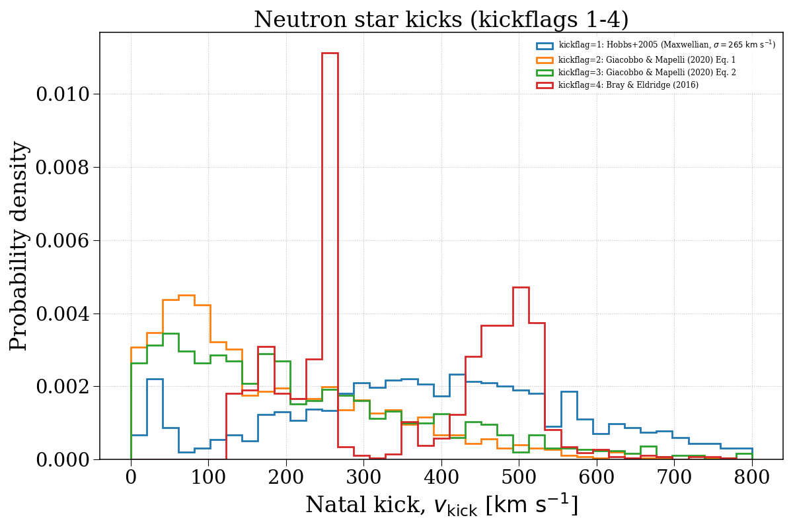
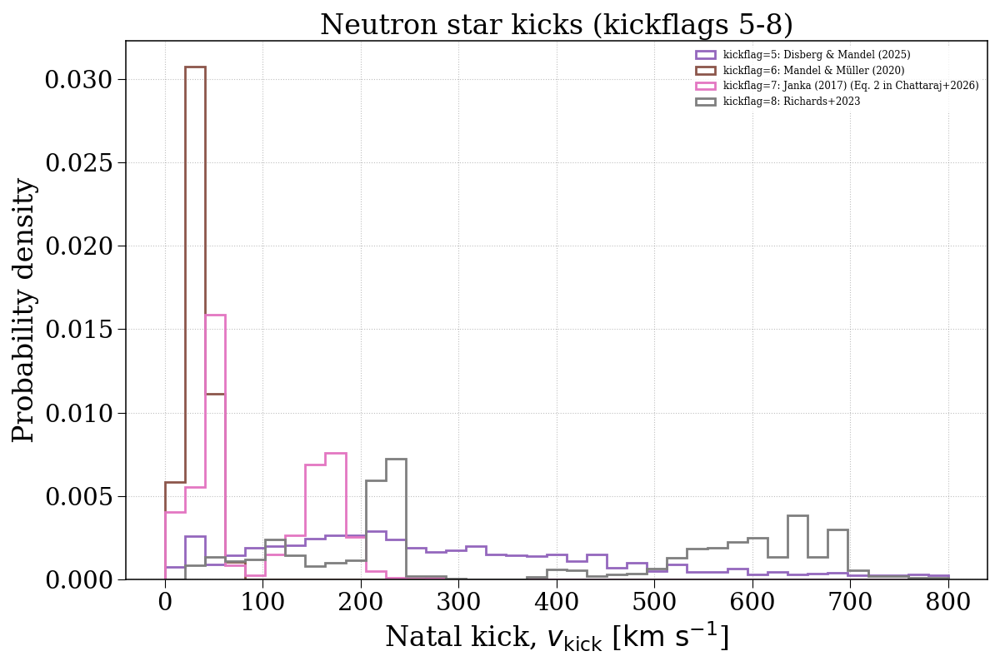
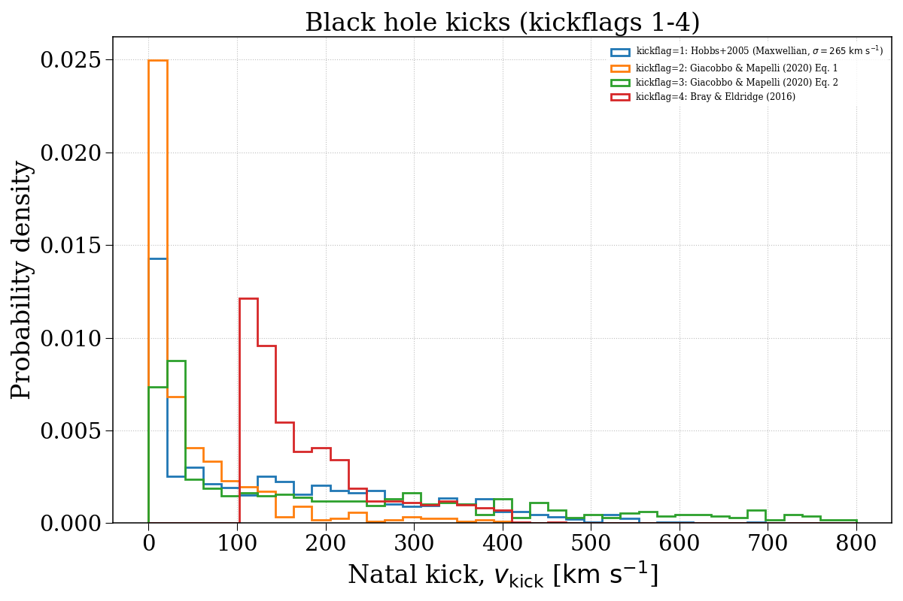
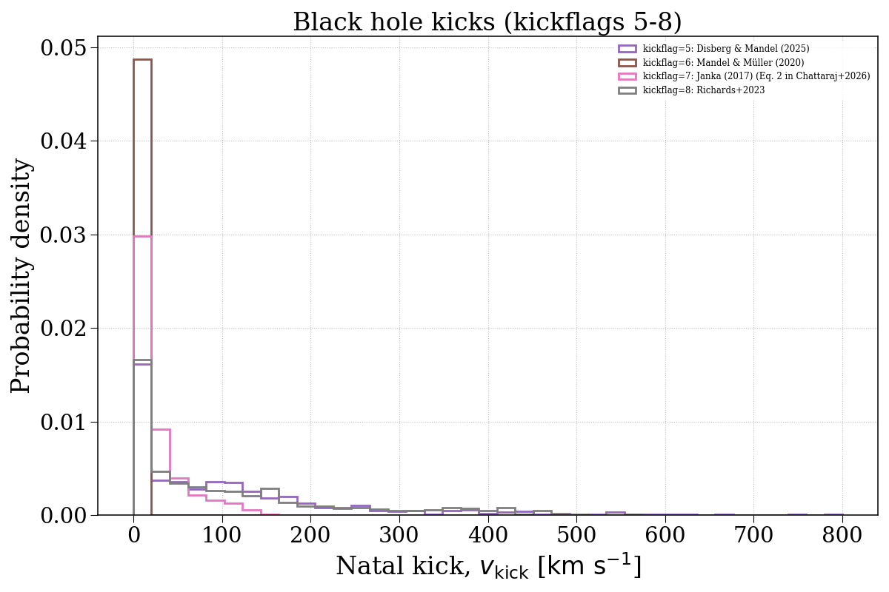

Note
Go to the end to download the full example code.
kickflag¶
This example demonstrates how changing the kickflag parameter can affect the natal kick velocity distributions of compact objects. We separate this into neutron stars and black holes.




Evolving population with kickflag = 1...
Evolving: 0%| | 0/2178 [00:00<?, ?sys/s]
Evolving: 1%|▏ | 29/2178 [00:00<00:14, 153.02sys/s]
Evolving: 2%|▏ | 48/2178 [00:00<00:13, 163.65sys/s]
Evolving: 3%|▎ | 65/2178 [00:00<00:15, 136.98sys/s]
Evolving: 4%|▎ | 80/2178 [00:00<00:16, 129.36sys/s]
Evolving: 4%|▍ | 94/2178 [00:00<00:19, 109.07sys/s]
Evolving: 5%|▌ | 114/2178 [00:00<00:15, 131.86sys/s]
Evolving: 6%|▌ | 129/2178 [00:00<00:15, 135.33sys/s]
Evolving: 7%|▋ | 144/2178 [00:01<00:20, 99.88sys/s]
Evolving: 8%|▊ | 164/2178 [00:01<00:17, 114.06sys/s]
Evolving: 8%|▊ | 181/2178 [00:01<00:16, 121.19sys/s]
Evolving: 9%|▉ | 195/2178 [00:01<00:16, 119.64sys/s]
Evolving: 10%|▉ | 208/2178 [00:01<00:16, 121.69sys/s]
Evolving: 10%|█ | 224/2178 [00:01<00:15, 126.56sys/s]
Evolving: 11%|█ | 238/2178 [00:01<00:17, 112.28sys/s]
Evolving: 12%|█▏ | 255/2178 [00:02<00:16, 117.43sys/s]
Evolving: 12%|█▏ | 268/2178 [00:02<00:20, 94.61sys/s]
Evolving: 14%|█▎ | 296/2178 [00:02<00:14, 133.69sys/s]
Evolving: 14%|█▍ | 312/2178 [00:02<00:13, 137.52sys/s]
Evolving: 15%|█▌ | 328/2178 [00:02<00:14, 127.60sys/s]
Evolving: 16%|█▌ | 343/2178 [00:02<00:14, 128.80sys/s]
Evolving: 16%|█▋ | 358/2178 [00:02<00:13, 131.54sys/s]
Evolving: 17%|█▋ | 374/2178 [00:02<00:13, 137.02sys/s]
Evolving: 18%|█▊ | 389/2178 [00:03<00:15, 118.24sys/s]
Evolving: 18%|█▊ | 402/2178 [00:03<00:17, 101.07sys/s]
Evolving: 19%|█▉ | 413/2178 [00:03<00:18, 95.20sys/s]
Evolving: 20%|█▉ | 427/2178 [00:03<00:20, 85.36sys/s]
Evolving: 21%|██ | 453/2178 [00:03<00:14, 119.23sys/s]
Evolving: 21%|██▏ | 468/2178 [00:03<00:13, 124.75sys/s]
Evolving: 22%|██▏ | 482/2178 [00:04<00:21, 80.24sys/s]
Evolving: 24%|██▎ | 515/2178 [00:04<00:13, 121.29sys/s]
Evolving: 24%|██▍ | 532/2178 [00:04<00:13, 122.76sys/s]
Evolving: 25%|██▌ | 548/2178 [00:04<00:12, 125.53sys/s]
Evolving: 26%|██▌ | 563/2178 [00:04<00:15, 102.01sys/s]
Evolving: 27%|██▋ | 579/2178 [00:04<00:14, 111.83sys/s]
Evolving: 27%|██▋ | 593/2178 [00:05<00:13, 114.50sys/s]
Evolving: 28%|██▊ | 608/2178 [00:05<00:13, 118.26sys/s]
Evolving: 29%|██▊ | 624/2178 [00:05<00:12, 127.11sys/s]
Evolving: 29%|██▉ | 638/2178 [00:05<00:11, 130.11sys/s]
Evolving: 30%|██▉ | 653/2178 [00:05<00:11, 130.72sys/s]
Evolving: 31%|███ | 671/2178 [00:05<00:10, 140.53sys/s]
Evolving: 31%|███▏ | 686/2178 [00:05<00:15, 94.45sys/s]
Evolving: 33%|███▎ | 716/2178 [00:05<00:10, 135.76sys/s]
Evolving: 34%|███▎ | 733/2178 [00:06<00:15, 94.60sys/s]
Evolving: 35%|███▍ | 757/2178 [00:06<00:12, 118.01sys/s]
Evolving: 35%|███▌ | 773/2178 [00:06<00:12, 115.87sys/s]
Evolving: 36%|███▌ | 788/2178 [00:06<00:14, 96.98sys/s]
Evolving: 37%|███▋ | 809/2178 [00:06<00:11, 116.36sys/s]
Evolving: 38%|███▊ | 824/2178 [00:07<00:13, 99.29sys/s]
Evolving: 39%|███▉ | 846/2178 [00:07<00:11, 118.05sys/s]
Evolving: 39%|███▉ | 860/2178 [00:07<00:10, 121.59sys/s]
Evolving: 40%|████ | 874/2178 [00:07<00:10, 120.08sys/s]
Evolving: 41%|████ | 888/2178 [00:07<00:11, 116.25sys/s]
Evolving: 41%|████▏ | 903/2178 [00:07<00:10, 119.06sys/s]
Evolving: 42%|████▏ | 916/2178 [00:07<00:10, 121.37sys/s]
Evolving: 43%|████▎ | 933/2178 [00:07<00:09, 129.11sys/s]
Evolving: 44%|████▎ | 949/2178 [00:08<00:10, 118.71sys/s]
Evolving: 44%|████▍ | 968/2178 [00:08<00:08, 136.07sys/s]
Evolving: 45%|████▌ | 983/2178 [00:08<00:09, 130.25sys/s]
Evolving: 46%|████▌ | 999/2178 [00:08<00:08, 137.20sys/s]
Evolving: 47%|████▋ | 1014/2178 [00:08<00:08, 136.12sys/s]
Evolving: 47%|████▋ | 1029/2178 [00:08<00:08, 138.03sys/s]
Evolving: 48%|████▊ | 1044/2178 [00:08<00:08, 138.86sys/s]
Evolving: 49%|████▊ | 1059/2178 [00:08<00:08, 129.81sys/s]
Evolving: 49%|████▉ | 1073/2178 [00:09<00:11, 97.84sys/s]
Evolving: 50%|█████ | 1097/2178 [00:09<00:08, 128.23sys/s]
Evolving: 51%|█████ | 1112/2178 [00:09<00:08, 124.91sys/s]
Evolving: 52%|█████▏ | 1126/2178 [00:09<00:08, 124.09sys/s]
Evolving: 52%|█████▏ | 1140/2178 [00:09<00:10, 95.70sys/s]
Evolving: 53%|█████▎ | 1152/2178 [00:09<00:11, 86.53sys/s]
Evolving: 54%|█████▍ | 1180/2178 [00:09<00:07, 125.50sys/s]
Evolving: 55%|█████▍ | 1197/2178 [00:10<00:07, 131.78sys/s]
Evolving: 56%|█████▌ | 1213/2178 [00:10<00:10, 92.09sys/s]
Evolving: 57%|█████▋ | 1242/2178 [00:10<00:10, 91.91sys/s]
Evolving: 58%|█████▊ | 1271/2178 [00:10<00:07, 121.31sys/s]
Evolving: 59%|█████▉ | 1287/2178 [00:11<00:08, 111.34sys/s]
Evolving: 60%|█████▉ | 1306/2178 [00:11<00:07, 122.44sys/s]
Evolving: 61%|██████ | 1321/2178 [00:11<00:07, 122.33sys/s]
Evolving: 61%|██████▏ | 1335/2178 [00:11<00:08, 104.90sys/s]
Evolving: 62%|██████▏ | 1359/2178 [00:11<00:06, 119.76sys/s]
Evolving: 63%|██████▎ | 1375/2178 [00:11<00:08, 99.08sys/s]
Evolving: 64%|██████▍ | 1404/2178 [00:12<00:06, 121.75sys/s]
Evolving: 65%|██████▌ | 1425/2178 [00:12<00:05, 133.46sys/s]
Evolving: 66%|██████▌ | 1440/2178 [00:12<00:07, 100.37sys/s]
Evolving: 67%|██████▋ | 1461/2178 [00:12<00:06, 115.28sys/s]
Evolving: 68%|██████▊ | 1477/2178 [00:12<00:05, 120.70sys/s]
Evolving: 69%|██████▊ | 1492/2178 [00:12<00:05, 125.52sys/s]
Evolving: 69%|██████▉ | 1506/2178 [00:12<00:05, 120.06sys/s]
Evolving: 70%|██████▉ | 1522/2178 [00:12<00:05, 129.27sys/s]
Evolving: 71%|███████ | 1536/2178 [00:13<00:07, 91.19sys/s]
Evolving: 72%|███████▏ | 1560/2178 [00:13<00:06, 96.29sys/s]
Evolving: 73%|███████▎ | 1585/2178 [00:13<00:04, 124.36sys/s]
Evolving: 74%|███████▎ | 1601/2178 [00:13<00:04, 123.48sys/s]
Evolving: 74%|███████▍ | 1617/2178 [00:13<00:04, 129.51sys/s]
Evolving: 75%|███████▌ | 1635/2178 [00:13<00:04, 132.55sys/s]
Evolving: 76%|███████▌ | 1650/2178 [00:14<00:04, 131.73sys/s]
Evolving: 76%|███████▋ | 1664/2178 [00:14<00:04, 126.02sys/s]
Evolving: 77%|███████▋ | 1678/2178 [00:14<00:03, 129.05sys/s]
Evolving: 78%|███████▊ | 1693/2178 [00:14<00:04, 119.22sys/s]
Evolving: 79%|███████▊ | 1711/2178 [00:14<00:03, 129.94sys/s]
Evolving: 79%|███████▉ | 1725/2178 [00:14<00:03, 132.30sys/s]
Evolving: 80%|███████▉ | 1739/2178 [00:14<00:03, 112.69sys/s]
Evolving: 81%|████████ | 1761/2178 [00:14<00:03, 135.80sys/s]
Evolving: 82%|████████▏ | 1777/2178 [00:15<00:02, 138.14sys/s]
Evolving: 82%|████████▏ | 1792/2178 [00:15<00:03, 107.25sys/s]
Evolving: 83%|████████▎ | 1805/2178 [00:15<00:03, 94.75sys/s]
Evolving: 83%|████████▎ | 1816/2178 [00:15<00:04, 79.21sys/s]
Evolving: 85%|████████▍ | 1849/2178 [00:15<00:02, 126.17sys/s]
Evolving: 86%|████████▌ | 1865/2178 [00:15<00:02, 123.44sys/s]
Evolving: 86%|████████▋ | 1880/2178 [00:16<00:02, 126.59sys/s]
Evolving: 87%|████████▋ | 1895/2178 [00:16<00:02, 131.02sys/s]
Evolving: 88%|████████▊ | 1910/2178 [00:16<00:02, 129.03sys/s]
Evolving: 88%|████████▊ | 1924/2178 [00:16<00:02, 122.02sys/s]
Evolving: 89%|████████▉ | 1938/2178 [00:16<00:01, 126.38sys/s]
Evolving: 90%|████████▉ | 1953/2178 [00:16<00:01, 126.09sys/s]
Evolving: 90%|█████████ | 1968/2178 [00:16<00:01, 128.97sys/s]
Evolving: 91%|█████████ | 1983/2178 [00:16<00:01, 130.58sys/s]
Evolving: 92%|█████████▏| 1998/2178 [00:16<00:01, 129.02sys/s]
Evolving: 92%|█████████▏| 2012/2178 [00:17<00:01, 129.59sys/s]
Evolving: 93%|█████████▎| 2029/2178 [00:17<00:01, 133.47sys/s]
Evolving: 94%|█████████▍| 2044/2178 [00:17<00:00, 134.77sys/s]
Evolving: 94%|█████████▍| 2058/2178 [00:17<00:00, 134.05sys/s]
Evolving: 95%|█████████▌| 2072/2178 [00:17<00:00, 133.80sys/s]
Evolving: 96%|█████████▌| 2086/2178 [00:17<00:00, 133.94sys/s]
Evolving: 96%|█████████▋| 2101/2178 [00:17<00:00, 118.92sys/s]
Evolving: 97%|█████████▋| 2117/2178 [00:17<00:00, 124.46sys/s]
Evolving: 98%|█████████▊| 2130/2178 [00:18<00:00, 108.20sys/s]
Evolving: 99%|█████████▉| 2153/2178 [00:18<00:00, 136.65sys/s]
Evolving: 100%|█████████▉| 2168/2178 [00:18<00:00, 137.68sys/s]
Evolving: 100%|██████████| 2178/2178 [00:18<00:00, 118.84sys/s]
[Time taken: 18.6614 seconds]
Evolving population with kickflag = 2...
Evolving: 0%| | 0/2178 [00:00<?, ?sys/s]
Evolving: 0%| | 8/2178 [00:00<00:27, 79.45sys/s]
Evolving: 1%| | 20/2178 [00:00<00:21, 102.60sys/s]
Evolving: 1%|▏ | 31/2178 [00:00<00:22, 95.91sys/s]
Evolving: 2%|▏ | 46/2178 [00:00<00:20, 105.96sys/s]
Evolving: 3%|▎ | 57/2178 [00:00<00:23, 91.34sys/s]
Evolving: 3%|▎ | 76/2178 [00:00<00:19, 108.80sys/s]
Evolving: 4%|▍ | 87/2178 [00:00<00:22, 92.07sys/s]
Evolving: 5%|▌ | 113/2178 [00:01<00:16, 125.81sys/s]
Evolving: 6%|▌ | 131/2178 [00:01<00:14, 138.76sys/s]
Evolving: 7%|▋ | 146/2178 [00:01<00:19, 105.62sys/s]
Evolving: 8%|▊ | 164/2178 [00:01<00:17, 114.77sys/s]
Evolving: 8%|▊ | 181/2178 [00:01<00:15, 125.58sys/s]
Evolving: 9%|▉ | 195/2178 [00:01<00:17, 115.96sys/s]
Evolving: 10%|▉ | 215/2178 [00:01<00:15, 129.54sys/s]
Evolving: 11%|█ | 229/2178 [00:01<00:15, 125.24sys/s]
Evolving: 11%|█ | 243/2178 [00:02<00:17, 113.26sys/s]
Evolving: 12%|█▏ | 258/2178 [00:02<00:15, 121.60sys/s]
Evolving: 12%|█▏ | 271/2178 [00:02<00:19, 96.86sys/s]
Evolving: 14%|█▎ | 296/2178 [00:02<00:15, 123.35sys/s]
Evolving: 14%|█▍ | 315/2178 [00:02<00:13, 137.08sys/s]
Evolving: 15%|█▌ | 330/2178 [00:02<00:13, 133.10sys/s]
Evolving: 16%|█▌ | 345/2178 [00:02<00:14, 128.45sys/s]
Evolving: 17%|█▋ | 360/2178 [00:03<00:13, 132.92sys/s]
Evolving: 17%|█▋ | 374/2178 [00:03<00:13, 133.63sys/s]
Evolving: 18%|█▊ | 388/2178 [00:03<00:13, 134.08sys/s]
Evolving: 18%|█▊ | 402/2178 [00:03<00:18, 94.67sys/s]
Evolving: 19%|█▉ | 414/2178 [00:03<00:18, 93.09sys/s]
Evolving: 20%|█▉ | 427/2178 [00:03<00:20, 86.23sys/s]
Evolving: 21%|██ | 451/2178 [00:03<00:14, 115.20sys/s]
Evolving: 21%|██▏ | 466/2178 [00:04<00:13, 122.60sys/s]
Evolving: 22%|██▏ | 480/2178 [00:04<00:16, 100.12sys/s]
Evolving: 23%|██▎ | 492/2178 [00:04<00:18, 92.63sys/s]
Evolving: 23%|██▎ | 510/2178 [00:04<00:15, 110.19sys/s]
Evolving: 24%|██▍ | 524/2178 [00:04<00:15, 109.99sys/s]
Evolving: 25%|██▍ | 543/2178 [00:04<00:12, 126.67sys/s]
Evolving: 26%|██▌ | 557/2178 [00:05<00:18, 89.16sys/s]
Evolving: 27%|██▋ | 582/2178 [00:05<00:13, 120.54sys/s]
Evolving: 27%|██▋ | 598/2178 [00:05<00:12, 121.57sys/s]
Evolving: 28%|██▊ | 613/2178 [00:05<00:12, 122.61sys/s]
Evolving: 29%|██▉ | 629/2178 [00:05<00:13, 118.75sys/s]
Evolving: 30%|██▉ | 649/2178 [00:05<00:11, 133.06sys/s]
Evolving: 31%|███ | 665/2178 [00:05<00:10, 138.68sys/s]
Evolving: 31%|███ | 680/2178 [00:05<00:10, 139.49sys/s]
Evolving: 32%|███▏ | 695/2178 [00:06<00:13, 107.55sys/s]
Evolving: 33%|███▎ | 717/2178 [00:06<00:11, 131.08sys/s]
Evolving: 34%|███▎ | 732/2178 [00:06<00:16, 88.31sys/s]
Evolving: 35%|███▍ | 756/2178 [00:06<00:12, 114.96sys/s]
Evolving: 35%|███▌ | 772/2178 [00:06<00:12, 110.81sys/s]
Evolving: 36%|███▌ | 786/2178 [00:06<00:14, 93.86sys/s]
Evolving: 37%|███▋ | 807/2178 [00:07<00:11, 114.74sys/s]
Evolving: 38%|███▊ | 821/2178 [00:07<00:14, 94.60sys/s]
Evolving: 39%|███▉ | 846/2178 [00:07<00:10, 123.09sys/s]
Evolving: 40%|███▉ | 862/2178 [00:07<00:10, 127.92sys/s]
Evolving: 40%|████ | 877/2178 [00:07<00:10, 122.52sys/s]
Evolving: 41%|████ | 891/2178 [00:07<00:10, 121.41sys/s]
Evolving: 42%|████▏ | 905/2178 [00:07<00:10, 121.45sys/s]
Evolving: 42%|████▏ | 918/2178 [00:07<00:10, 122.84sys/s]
Evolving: 43%|████▎ | 934/2178 [00:08<00:09, 129.81sys/s]
Evolving: 44%|████▎ | 949/2178 [00:08<00:10, 119.27sys/s]
Evolving: 44%|████▍ | 968/2178 [00:08<00:08, 135.03sys/s]
Evolving: 45%|████▌ | 983/2178 [00:08<00:08, 133.31sys/s]
Evolving: 46%|████▌ | 997/2178 [00:08<00:08, 134.85sys/s]
Evolving: 46%|████▋ | 1011/2178 [00:08<00:09, 127.67sys/s]
Evolving: 47%|████▋ | 1025/2178 [00:08<00:08, 128.93sys/s]
Evolving: 48%|████▊ | 1042/2178 [00:08<00:08, 138.90sys/s]
Evolving: 49%|████▊ | 1057/2178 [00:09<00:08, 127.18sys/s]
Evolving: 49%|████▉ | 1071/2178 [00:09<00:11, 93.73sys/s]
Evolving: 50%|█████ | 1099/2178 [00:09<00:08, 124.73sys/s]
Evolving: 51%|█████ | 1113/2178 [00:09<00:08, 125.79sys/s]
Evolving: 52%|█████▏ | 1128/2178 [00:09<00:08, 131.13sys/s]
Evolving: 52%|█████▏ | 1142/2178 [00:09<00:10, 99.99sys/s]
Evolving: 53%|█████▎ | 1154/2178 [00:10<00:11, 90.18sys/s]
Evolving: 54%|█████▍ | 1180/2178 [00:10<00:08, 124.29sys/s]
Evolving: 55%|█████▍ | 1195/2178 [00:10<00:07, 127.23sys/s]
Evolving: 56%|█████▌ | 1210/2178 [00:10<00:08, 120.09sys/s]
Evolving: 56%|█████▌ | 1224/2178 [00:10<00:08, 106.60sys/s]
Evolving: 57%|█████▋ | 1242/2178 [00:10<00:11, 80.87sys/s]
Evolving: 59%|█████▊ | 1277/2178 [00:11<00:09, 96.76sys/s]
Evolving: 60%|█████▉ | 1306/2178 [00:11<00:07, 120.32sys/s]
Evolving: 61%|██████ | 1324/2178 [00:11<00:06, 127.26sys/s]
Evolving: 61%|██████▏ | 1339/2178 [00:11<00:07, 115.27sys/s]
Evolving: 62%|██████▏ | 1359/2178 [00:11<00:06, 119.23sys/s]
Evolving: 63%|██████▎ | 1375/2178 [00:12<00:08, 98.91sys/s]
Evolving: 64%|██████▍ | 1404/2178 [00:12<00:06, 125.75sys/s]
Evolving: 65%|██████▌ | 1423/2178 [00:12<00:05, 134.17sys/s]
Evolving: 66%|██████▌ | 1438/2178 [00:12<00:05, 128.62sys/s]
Evolving: 67%|██████▋ | 1452/2178 [00:12<00:07, 103.39sys/s]
Evolving: 67%|██████▋ | 1467/2178 [00:12<00:06, 110.05sys/s]
Evolving: 68%|██████▊ | 1484/2178 [00:12<00:05, 119.84sys/s]
Evolving: 69%|██████▉ | 1498/2178 [00:12<00:05, 123.97sys/s]
Evolving: 69%|██████▉ | 1513/2178 [00:13<00:05, 126.79sys/s]
Evolving: 70%|███████ | 1527/2178 [00:13<00:07, 90.27sys/s]
Evolving: 71%|███████▏ | 1553/2178 [00:13<00:05, 124.39sys/s]
Evolving: 72%|███████▏ | 1569/2178 [00:13<00:05, 106.76sys/s]
Evolving: 73%|███████▎ | 1586/2178 [00:13<00:05, 118.35sys/s]
Evolving: 74%|███████▎ | 1602/2178 [00:13<00:04, 127.70sys/s]
Evolving: 74%|███████▍ | 1617/2178 [00:13<00:04, 132.21sys/s]
Evolving: 75%|███████▍ | 1632/2178 [00:14<00:04, 131.50sys/s]
Evolving: 76%|███████▌ | 1647/2178 [00:14<00:04, 129.61sys/s]
Evolving: 76%|███████▋ | 1661/2178 [00:14<00:04, 125.29sys/s]
Evolving: 77%|███████▋ | 1678/2178 [00:14<00:03, 134.21sys/s]
Evolving: 78%|███████▊ | 1692/2178 [00:14<00:03, 134.71sys/s]
Evolving: 78%|███████▊ | 1706/2178 [00:14<00:03, 123.61sys/s]
Evolving: 79%|███████▉ | 1722/2178 [00:14<00:03, 129.47sys/s]
Evolving: 80%|███████▉ | 1736/2178 [00:14<00:03, 130.95sys/s]
Evolving: 80%|████████ | 1750/2178 [00:14<00:03, 126.76sys/s]
Evolving: 81%|████████ | 1763/2178 [00:15<00:03, 124.79sys/s]
Evolving: 82%|████████▏ | 1776/2178 [00:15<00:03, 124.04sys/s]
Evolving: 82%|████████▏ | 1789/2178 [00:15<00:04, 96.74sys/s]
Evolving: 83%|████████▎ | 1800/2178 [00:15<00:04, 82.43sys/s]
Evolving: 83%|████████▎ | 1814/2178 [00:15<00:04, 75.90sys/s]
Evolving: 85%|████████▍ | 1849/2178 [00:15<00:02, 129.35sys/s]
Evolving: 86%|████████▌ | 1865/2178 [00:16<00:02, 125.10sys/s]
Evolving: 86%|████████▋ | 1880/2178 [00:16<00:02, 124.23sys/s]
Evolving: 87%|████████▋ | 1896/2178 [00:16<00:02, 128.98sys/s]
Evolving: 88%|████████▊ | 1911/2178 [00:16<00:02, 127.99sys/s]
Evolving: 88%|████████▊ | 1925/2178 [00:16<00:02, 124.98sys/s]
Evolving: 89%|████████▉ | 1939/2178 [00:16<00:01, 128.45sys/s]
Evolving: 90%|████████▉ | 1953/2178 [00:16<00:01, 127.63sys/s]
Evolving: 90%|█████████ | 1968/2178 [00:16<00:01, 127.42sys/s]
Evolving: 91%|█████████ | 1983/2178 [00:16<00:01, 131.12sys/s]
Evolving: 92%|█████████▏| 1998/2178 [00:17<00:01, 127.60sys/s]
Evolving: 92%|█████████▏| 2014/2178 [00:17<00:01, 136.24sys/s]
Evolving: 93%|█████████▎| 2028/2178 [00:17<00:01, 130.78sys/s]
Evolving: 94%|█████████▍| 2042/2178 [00:17<00:01, 131.23sys/s]
Evolving: 94%|█████████▍| 2058/2178 [00:17<00:00, 135.07sys/s]
Evolving: 95%|█████████▌| 2072/2178 [00:17<00:00, 135.63sys/s]
Evolving: 96%|█████████▌| 2086/2178 [00:17<00:00, 136.46sys/s]
Evolving: 96%|█████████▋| 2100/2178 [00:17<00:00, 134.72sys/s]
Evolving: 97%|█████████▋| 2114/2178 [00:17<00:00, 131.01sys/s]
Evolving: 98%|█████████▊| 2128/2178 [00:18<00:00, 96.16sys/s]
Evolving: 99%|█████████▉| 2155/2178 [00:18<00:00, 133.53sys/s]
Evolving: 100%|█████████▉| 2171/2178 [00:18<00:00, 131.94sys/s]
Evolving: 100%|██████████| 2178/2178 [00:18<00:00, 117.79sys/s]
[Time taken: 18.6790 seconds]
Evolving population with kickflag = 3...
Evolving: 0%| | 0/2178 [00:00<?, ?sys/s]
Evolving: 0%| | 8/2178 [00:00<00:29, 73.84sys/s]
Evolving: 1%| | 25/2178 [00:00<00:18, 116.60sys/s]
Evolving: 2%|▏ | 37/2178 [00:00<00:24, 88.85sys/s]
Evolving: 2%|▏ | 49/2178 [00:00<00:21, 97.58sys/s]
Evolving: 3%|▎ | 66/2178 [00:00<00:18, 112.76sys/s]
Evolving: 4%|▎ | 78/2178 [00:00<00:19, 110.08sys/s]
Evolving: 4%|▍ | 90/2178 [00:00<00:21, 96.19sys/s]
Evolving: 5%|▌ | 115/2178 [00:01<00:15, 133.74sys/s]
Evolving: 6%|▌ | 130/2178 [00:01<00:15, 129.81sys/s]
Evolving: 7%|▋ | 144/2178 [00:01<00:20, 100.31sys/s]
Evolving: 8%|▊ | 164/2178 [00:01<00:16, 118.53sys/s]
Evolving: 8%|▊ | 178/2178 [00:01<00:16, 121.82sys/s]
Evolving: 9%|▉ | 195/2178 [00:01<00:17, 114.93sys/s]
Evolving: 10%|▉ | 215/2178 [00:01<00:14, 131.35sys/s]
Evolving: 11%|█ | 230/2178 [00:01<00:15, 128.02sys/s]
Evolving: 11%|█ | 244/2178 [00:02<00:16, 116.63sys/s]
Evolving: 12%|█▏ | 259/2178 [00:02<00:16, 118.83sys/s]
Evolving: 12%|█▏ | 272/2178 [00:02<00:19, 99.33sys/s]
Evolving: 14%|█▎ | 298/2178 [00:02<00:14, 131.46sys/s]
Evolving: 14%|█▍ | 313/2178 [00:02<00:14, 132.84sys/s]
Evolving: 15%|█▌ | 328/2178 [00:02<00:14, 130.81sys/s]
Evolving: 16%|█▌ | 342/2178 [00:02<00:14, 128.08sys/s]
Evolving: 16%|█▋ | 358/2178 [00:03<00:13, 131.46sys/s]
Evolving: 17%|█▋ | 374/2178 [00:03<00:13, 131.34sys/s]
Evolving: 18%|█▊ | 389/2178 [00:03<00:15, 118.59sys/s]
Evolving: 18%|█▊ | 402/2178 [00:03<00:17, 101.03sys/s]
Evolving: 19%|█▉ | 413/2178 [00:03<00:18, 93.66sys/s]
Evolving: 20%|█▉ | 427/2178 [00:03<00:19, 88.88sys/s]
Evolving: 21%|██ | 451/2178 [00:03<00:14, 118.09sys/s]
Evolving: 21%|██▏ | 465/2178 [00:04<00:14, 121.85sys/s]
Evolving: 22%|██▏ | 478/2178 [00:04<00:16, 100.93sys/s]
Evolving: 22%|██▏ | 490/2178 [00:04<00:18, 90.90sys/s]
Evolving: 24%|██▎ | 512/2178 [00:04<00:14, 117.51sys/s]
Evolving: 24%|██▍ | 526/2178 [00:04<00:14, 114.00sys/s]
Evolving: 25%|██▌ | 545/2178 [00:04<00:13, 122.91sys/s]
Evolving: 26%|██▌ | 559/2178 [00:04<00:16, 97.84sys/s]
Evolving: 27%|██▋ | 579/2178 [00:05<00:13, 117.60sys/s]
Evolving: 27%|██▋ | 593/2178 [00:05<00:13, 118.68sys/s]
Evolving: 28%|██▊ | 607/2178 [00:05<00:12, 122.08sys/s]
Evolving: 29%|██▊ | 624/2178 [00:05<00:11, 131.14sys/s]
Evolving: 29%|██▉ | 638/2178 [00:05<00:11, 131.86sys/s]
Evolving: 30%|██▉ | 652/2178 [00:05<00:11, 133.63sys/s]
Evolving: 31%|███ | 667/2178 [00:05<00:11, 135.79sys/s]
Evolving: 31%|███▏ | 682/2178 [00:05<00:10, 138.97sys/s]
Evolving: 32%|███▏ | 697/2178 [00:06<00:13, 109.30sys/s]
Evolving: 33%|███▎ | 718/2178 [00:06<00:11, 128.63sys/s]
Evolving: 34%|███▎ | 732/2178 [00:06<00:16, 86.80sys/s]
Evolving: 35%|███▍ | 755/2178 [00:06<00:12, 112.60sys/s]
Evolving: 35%|███▌ | 770/2178 [00:06<00:13, 106.72sys/s]
Evolving: 36%|███▌ | 784/2178 [00:06<00:15, 90.14sys/s]
Evolving: 37%|███▋ | 806/2178 [00:07<00:11, 114.82sys/s]
Evolving: 38%|███▊ | 821/2178 [00:07<00:14, 96.42sys/s]
Evolving: 39%|███▉ | 846/2178 [00:07<00:10, 123.55sys/s]
Evolving: 40%|███▉ | 862/2178 [00:07<00:10, 127.19sys/s]
Evolving: 40%|████ | 877/2178 [00:07<00:10, 126.59sys/s]
Evolving: 41%|████ | 892/2178 [00:07<00:10, 119.68sys/s]
Evolving: 42%|████▏ | 906/2178 [00:07<00:10, 123.58sys/s]
Evolving: 42%|████▏ | 920/2178 [00:07<00:10, 124.26sys/s]
Evolving: 43%|████▎ | 935/2178 [00:08<00:09, 124.44sys/s]
Evolving: 44%|████▎ | 949/2178 [00:08<00:10, 114.29sys/s]
Evolving: 45%|████▍ | 970/2178 [00:08<00:09, 125.95sys/s]
Evolving: 45%|████▌ | 986/2178 [00:08<00:08, 133.80sys/s]
Evolving: 46%|████▌ | 1004/2178 [00:08<00:09, 117.85sys/s]
Evolving: 47%|████▋ | 1028/2178 [00:08<00:08, 142.96sys/s]
Evolving: 48%|████▊ | 1044/2178 [00:08<00:07, 145.73sys/s]
Evolving: 49%|████▊ | 1060/2178 [00:09<00:08, 135.65sys/s]
Evolving: 49%|████▉ | 1075/2178 [00:09<00:10, 106.06sys/s]
Evolving: 50%|█████ | 1097/2178 [00:09<00:08, 128.07sys/s]
Evolving: 51%|█████ | 1112/2178 [00:09<00:08, 120.38sys/s]
Evolving: 52%|█████▏ | 1129/2178 [00:09<00:08, 131.11sys/s]
Evolving: 53%|█████▎ | 1144/2178 [00:09<00:09, 105.68sys/s]
Evolving: 53%|█████▎ | 1157/2178 [00:09<00:10, 95.52sys/s]
Evolving: 54%|█████▍ | 1178/2178 [00:10<00:08, 119.36sys/s]
Evolving: 55%|█████▍ | 1193/2178 [00:10<00:08, 122.23sys/s]
Evolving: 55%|█████▌ | 1208/2178 [00:10<00:08, 111.60sys/s]
Evolving: 56%|█████▌ | 1221/2178 [00:10<00:09, 99.88sys/s]
Evolving: 57%|█████▋ | 1242/2178 [00:10<00:11, 82.66sys/s]
Evolving: 59%|█████▊ | 1277/2178 [00:11<00:09, 97.44sys/s]
Evolving: 60%|█████▉ | 1306/2178 [00:11<00:07, 124.06sys/s]
Evolving: 61%|██████ | 1321/2178 [00:11<00:06, 128.30sys/s]
Evolving: 61%|██████▏ | 1336/2178 [00:11<00:07, 107.76sys/s]
Evolving: 62%|██████▏ | 1359/2178 [00:11<00:06, 122.40sys/s]
Evolving: 63%|██████▎ | 1375/2178 [00:11<00:08, 98.04sys/s]
Evolving: 64%|██████▍ | 1404/2178 [00:12<00:06, 125.56sys/s]
Evolving: 65%|██████▌ | 1424/2178 [00:12<00:05, 137.01sys/s]
Evolving: 66%|██████▌ | 1440/2178 [00:12<00:07, 103.13sys/s]
Evolving: 67%|██████▋ | 1458/2178 [00:12<00:06, 116.81sys/s]
Evolving: 68%|██████▊ | 1473/2178 [00:12<00:05, 118.43sys/s]
Evolving: 68%|██████▊ | 1488/2178 [00:12<00:05, 123.17sys/s]
Evolving: 69%|██████▉ | 1503/2178 [00:12<00:05, 113.50sys/s]
Evolving: 70%|██████▉ | 1522/2178 [00:13<00:05, 128.78sys/s]
Evolving: 71%|███████ | 1537/2178 [00:13<00:06, 95.17sys/s]
Evolving: 72%|███████▏ | 1560/2178 [00:13<00:06, 98.93sys/s]
Evolving: 73%|███████▎ | 1586/2178 [00:13<00:04, 127.42sys/s]
Evolving: 74%|███████▎ | 1602/2178 [00:13<00:04, 132.94sys/s]
Evolving: 74%|███████▍ | 1618/2178 [00:13<00:04, 125.70sys/s]
Evolving: 75%|███████▍ | 1633/2178 [00:14<00:04, 130.15sys/s]
Evolving: 76%|███████▌ | 1649/2178 [00:14<00:03, 134.35sys/s]
Evolving: 76%|███████▋ | 1664/2178 [00:14<00:03, 132.67sys/s]
Evolving: 77%|███████▋ | 1678/2178 [00:14<00:03, 133.68sys/s]
Evolving: 78%|███████▊ | 1693/2178 [00:14<00:04, 117.55sys/s]
Evolving: 79%|███████▊ | 1711/2178 [00:14<00:03, 130.11sys/s]
Evolving: 79%|███████▉ | 1726/2178 [00:14<00:03, 132.62sys/s]
Evolving: 80%|███████▉ | 1740/2178 [00:14<00:03, 111.99sys/s]
Evolving: 81%|████████ | 1762/2178 [00:15<00:03, 134.38sys/s]
Evolving: 82%|████████▏ | 1777/2178 [00:15<00:02, 137.52sys/s]
Evolving: 82%|████████▏ | 1792/2178 [00:15<00:03, 109.53sys/s]
Evolving: 83%|████████▎ | 1805/2178 [00:15<00:04, 92.78sys/s]
Evolving: 83%|████████▎ | 1816/2178 [00:15<00:04, 78.93sys/s]
Evolving: 85%|████████▍ | 1849/2178 [00:15<00:02, 122.88sys/s]
Evolving: 86%|████████▌ | 1864/2178 [00:16<00:02, 118.32sys/s]
Evolving: 86%|████████▋ | 1881/2178 [00:16<00:02, 129.29sys/s]
Evolving: 87%|████████▋ | 1896/2178 [00:16<00:02, 131.84sys/s]
Evolving: 88%|████████▊ | 1911/2178 [00:16<00:02, 127.71sys/s]
Evolving: 88%|████████▊ | 1925/2178 [00:16<00:02, 124.76sys/s]
Evolving: 89%|████████▉ | 1938/2178 [00:16<00:01, 122.62sys/s]
Evolving: 90%|████████▉ | 1953/2178 [00:16<00:01, 125.38sys/s]
Evolving: 90%|█████████ | 1968/2178 [00:16<00:01, 127.73sys/s]
Evolving: 91%|█████████ | 1984/2178 [00:16<00:01, 133.18sys/s]
Evolving: 92%|█████████▏| 1998/2178 [00:17<00:01, 131.53sys/s]
Evolving: 92%|█████████▏| 2012/2178 [00:17<00:01, 131.49sys/s]
Evolving: 93%|█████████▎| 2028/2178 [00:17<00:01, 132.24sys/s]
Evolving: 94%|█████████▍| 2042/2178 [00:17<00:01, 129.77sys/s]
Evolving: 94%|█████████▍| 2057/2178 [00:17<00:00, 135.10sys/s]
Evolving: 95%|█████████▌| 2071/2178 [00:17<00:00, 133.91sys/s]
Evolving: 96%|█████████▌| 2085/2178 [00:17<00:00, 133.33sys/s]
Evolving: 96%|█████████▋| 2101/2178 [00:17<00:00, 115.89sys/s]
Evolving: 97%|█████████▋| 2117/2178 [00:17<00:00, 119.75sys/s]
Evolving: 98%|█████████▊| 2130/2178 [00:18<00:00, 111.61sys/s]
Evolving: 99%|█████████▉| 2151/2178 [00:18<00:00, 134.31sys/s]
Evolving: 99%|█████████▉| 2166/2178 [00:18<00:00, 135.24sys/s]
Evolving: 100%|██████████| 2178/2178 [00:18<00:00, 118.09sys/s]
[Time taken: 18.6346 seconds]
Evolving population with kickflag = 4...
Evolving: 0%| | 0/2178 [00:00<?, ?sys/s]
Evolving: 0%| | 8/2178 [00:00<00:27, 78.38sys/s]
Evolving: 1%| | 25/2178 [00:00<00:17, 121.01sys/s]
Evolving: 2%|▏ | 37/2178 [00:00<00:24, 87.22sys/s]
Evolving: 3%|▎ | 56/2178 [00:00<00:18, 112.46sys/s]
Evolving: 3%|▎ | 68/2178 [00:00<00:18, 111.06sys/s]
Evolving: 4%|▍ | 83/2178 [00:00<00:17, 119.42sys/s]
Evolving: 4%|▍ | 96/2178 [00:00<00:19, 107.28sys/s]
Evolving: 5%|▌ | 110/2178 [00:01<00:18, 113.20sys/s]
Evolving: 6%|▌ | 127/2178 [00:01<00:16, 126.52sys/s]
Evolving: 6%|▋ | 141/2178 [00:01<00:21, 93.20sys/s]
Evolving: 8%|▊ | 164/2178 [00:01<00:16, 119.63sys/s]
Evolving: 8%|▊ | 181/2178 [00:01<00:16, 124.31sys/s]
Evolving: 9%|▉ | 195/2178 [00:01<00:16, 120.22sys/s]
Evolving: 10%|▉ | 213/2178 [00:01<00:14, 133.03sys/s]
Evolving: 10%|█ | 228/2178 [00:01<00:15, 127.47sys/s]
Evolving: 11%|█ | 242/2178 [00:02<00:17, 109.84sys/s]
Evolving: 12%|█▏ | 260/2178 [00:02<00:15, 122.69sys/s]
Evolving: 13%|█▎ | 274/2178 [00:02<00:19, 98.72sys/s]
Evolving: 14%|█▍ | 301/2178 [00:02<00:14, 126.23sys/s]
Evolving: 15%|█▍ | 318/2178 [00:02<00:13, 133.24sys/s]
Evolving: 15%|█▌ | 333/2178 [00:02<00:14, 131.36sys/s]
Evolving: 16%|█▌ | 347/2178 [00:02<00:13, 131.56sys/s]
Evolving: 17%|█▋ | 364/2178 [00:03<00:13, 138.57sys/s]
Evolving: 17%|█▋ | 379/2178 [00:03<00:13, 135.84sys/s]
Evolving: 18%|█▊ | 393/2178 [00:03<00:14, 125.22sys/s]
Evolving: 19%|█▊ | 406/2178 [00:03<00:21, 81.08sys/s]
Evolving: 20%|█▉ | 427/2178 [00:03<00:18, 92.87sys/s]
Evolving: 21%|██ | 449/2178 [00:03<00:15, 110.82sys/s]
Evolving: 21%|██▏ | 468/2178 [00:04<00:13, 127.18sys/s]
Evolving: 22%|██▏ | 483/2178 [00:04<00:20, 84.40sys/s]
Evolving: 24%|██▎ | 512/2178 [00:04<00:14, 116.97sys/s]
Evolving: 24%|██▍ | 528/2178 [00:04<00:13, 119.30sys/s]
Evolving: 25%|██▌ | 545/2178 [00:04<00:12, 126.86sys/s]
Evolving: 26%|██▌ | 560/2178 [00:04<00:16, 100.89sys/s]
Evolving: 27%|██▋ | 578/2178 [00:05<00:13, 114.82sys/s]
Evolving: 27%|██▋ | 592/2178 [00:05<00:13, 117.82sys/s]
Evolving: 28%|██▊ | 606/2178 [00:05<00:13, 120.48sys/s]
Evolving: 29%|██▊ | 621/2178 [00:05<00:12, 126.73sys/s]
Evolving: 29%|██▉ | 636/2178 [00:05<00:11, 130.74sys/s]
Evolving: 30%|██▉ | 652/2178 [00:05<00:11, 133.43sys/s]
Evolving: 31%|███ | 667/2178 [00:05<00:11, 136.78sys/s]
Evolving: 31%|███▏ | 682/2178 [00:05<00:10, 137.04sys/s]
Evolving: 32%|███▏ | 696/2178 [00:06<00:13, 106.55sys/s]
Evolving: 33%|███▎ | 717/2178 [00:06<00:11, 126.08sys/s]
Evolving: 34%|███▎ | 731/2178 [00:06<00:12, 112.90sys/s]
Evolving: 34%|███▍ | 744/2178 [00:06<00:16, 88.99sys/s]
Evolving: 35%|███▌ | 764/2178 [00:06<00:13, 105.18sys/s]
Evolving: 36%|███▌ | 781/2178 [00:06<00:11, 117.16sys/s]
Evolving: 36%|███▋ | 794/2178 [00:06<00:13, 99.58sys/s]
Evolving: 37%|███▋ | 812/2178 [00:07<00:11, 114.14sys/s]
Evolving: 38%|███▊ | 825/2178 [00:07<00:13, 97.67sys/s]
Evolving: 39%|███▉ | 846/2178 [00:07<00:12, 108.09sys/s]
Evolving: 40%|███▉ | 865/2178 [00:07<00:10, 124.46sys/s]
Evolving: 40%|████ | 879/2178 [00:07<00:10, 122.20sys/s]
Evolving: 41%|████ | 892/2178 [00:07<00:10, 119.51sys/s]
Evolving: 42%|████▏ | 907/2178 [00:07<00:10, 125.85sys/s]
Evolving: 42%|████▏ | 921/2178 [00:07<00:10, 123.68sys/s]
Evolving: 43%|████▎ | 936/2178 [00:08<00:09, 126.84sys/s]
Evolving: 44%|████▎ | 949/2178 [00:08<00:10, 116.23sys/s]
Evolving: 44%|████▍ | 969/2178 [00:08<00:08, 137.30sys/s]
Evolving: 45%|████▌ | 984/2178 [00:08<00:08, 134.77sys/s]
Evolving: 46%|████▌ | 998/2178 [00:08<00:08, 135.44sys/s]
Evolving: 46%|████▋ | 1012/2178 [00:08<00:09, 128.46sys/s]
Evolving: 47%|████▋ | 1029/2178 [00:08<00:08, 132.92sys/s]
Evolving: 48%|████▊ | 1046/2178 [00:08<00:09, 119.17sys/s]
Evolving: 49%|████▉ | 1068/2178 [00:09<00:11, 99.61sys/s]
Evolving: 50%|█████ | 1098/2178 [00:09<00:07, 138.00sys/s]
Evolving: 51%|█████ | 1115/2178 [00:09<00:08, 127.56sys/s]
Evolving: 52%|█████▏ | 1130/2178 [00:09<00:07, 131.22sys/s]
Evolving: 53%|█████▎ | 1145/2178 [00:09<00:09, 108.05sys/s]
Evolving: 53%|█████▎ | 1158/2178 [00:09<00:10, 101.14sys/s]
Evolving: 54%|█████▍ | 1178/2178 [00:10<00:08, 116.33sys/s]
Evolving: 55%|█████▍ | 1194/2178 [00:10<00:07, 125.19sys/s]
Evolving: 55%|█████▌ | 1208/2178 [00:10<00:08, 118.96sys/s]
Evolving: 56%|█████▌ | 1221/2178 [00:10<00:09, 97.61sys/s]
Evolving: 57%|█████▋ | 1242/2178 [00:10<00:11, 82.48sys/s]
Evolving: 59%|█████▊ | 1277/2178 [00:11<00:09, 98.04sys/s]
Evolving: 60%|█████▉ | 1306/2178 [00:11<00:06, 128.05sys/s]
Evolving: 61%|██████ | 1322/2178 [00:11<00:06, 128.51sys/s]
Evolving: 61%|██████▏ | 1337/2178 [00:11<00:07, 109.37sys/s]
Evolving: 62%|██████▏ | 1359/2178 [00:11<00:06, 121.42sys/s]
Evolving: 63%|██████▎ | 1375/2178 [00:11<00:08, 99.27sys/s]
Evolving: 64%|██████▍ | 1404/2178 [00:12<00:06, 127.29sys/s]
Evolving: 65%|██████▌ | 1423/2178 [00:12<00:05, 134.14sys/s]
Evolving: 66%|██████▌ | 1439/2178 [00:12<00:07, 102.64sys/s]
Evolving: 67%|██████▋ | 1455/2178 [00:12<00:06, 112.85sys/s]
Evolving: 68%|██████▊ | 1472/2178 [00:12<00:05, 123.83sys/s]
Evolving: 68%|██████▊ | 1487/2178 [00:12<00:05, 127.98sys/s]
Evolving: 69%|██████▉ | 1502/2178 [00:12<00:05, 128.67sys/s]
Evolving: 70%|██████▉ | 1516/2178 [00:13<00:05, 127.82sys/s]
Evolving: 70%|███████ | 1530/2178 [00:13<00:06, 94.83sys/s]
Evolving: 71%|███████ | 1542/2178 [00:13<00:06, 98.02sys/s]
Evolving: 72%|███████▏ | 1560/2178 [00:13<00:06, 97.44sys/s]
Evolving: 73%|███████▎ | 1584/2178 [00:13<00:04, 127.84sys/s]
Evolving: 73%|███████▎ | 1600/2178 [00:13<00:04, 133.60sys/s]
Evolving: 74%|███████▍ | 1615/2178 [00:13<00:04, 134.01sys/s]
Evolving: 75%|███████▍ | 1630/2178 [00:13<00:04, 136.28sys/s]
Evolving: 76%|███████▌ | 1645/2178 [00:14<00:04, 130.59sys/s]
Evolving: 76%|███████▋ | 1661/2178 [00:14<00:03, 136.72sys/s]
Evolving: 77%|███████▋ | 1676/2178 [00:14<00:03, 136.50sys/s]
Evolving: 78%|███████▊ | 1690/2178 [00:14<00:03, 130.55sys/s]
Evolving: 78%|███████▊ | 1704/2178 [00:14<00:03, 126.35sys/s]
Evolving: 79%|███████▉ | 1718/2178 [00:14<00:03, 129.84sys/s]
Evolving: 80%|███████▉ | 1732/2178 [00:14<00:03, 129.37sys/s]
Evolving: 80%|████████ | 1746/2178 [00:14<00:03, 118.96sys/s]
Evolving: 81%|████████ | 1763/2178 [00:15<00:03, 127.57sys/s]
Evolving: 82%|████████▏ | 1780/2178 [00:15<00:02, 134.68sys/s]
Evolving: 82%|████████▏ | 1794/2178 [00:15<00:04, 80.76sys/s]
Evolving: 83%|████████▎ | 1814/2178 [00:15<00:04, 82.10sys/s]
Evolving: 85%|████████▍ | 1849/2178 [00:15<00:02, 126.91sys/s]
Evolving: 86%|████████▌ | 1866/2178 [00:15<00:02, 123.30sys/s]
Evolving: 86%|████████▋ | 1882/2178 [00:16<00:02, 127.22sys/s]
Evolving: 87%|████████▋ | 1897/2178 [00:16<00:02, 128.55sys/s]
Evolving: 88%|████████▊ | 1912/2178 [00:16<00:02, 114.34sys/s]
Evolving: 89%|████████▊ | 1931/2178 [00:16<00:01, 131.05sys/s]
Evolving: 89%|████████▉ | 1946/2178 [00:16<00:01, 131.19sys/s]
Evolving: 90%|█████████ | 1962/2178 [00:16<00:01, 133.56sys/s]
Evolving: 91%|█████████ | 1977/2178 [00:16<00:01, 136.39sys/s]
Evolving: 91%|█████████▏| 1992/2178 [00:16<00:01, 124.13sys/s]
Evolving: 92%|█████████▏| 2006/2178 [00:17<00:01, 126.25sys/s]
Evolving: 93%|█████████▎| 2025/2178 [00:17<00:01, 140.46sys/s]
Evolving: 94%|█████████▎| 2040/2178 [00:17<00:01, 136.87sys/s]
Evolving: 94%|█████████▍| 2054/2178 [00:17<00:00, 136.65sys/s]
Evolving: 95%|█████████▍| 2068/2178 [00:17<00:00, 136.36sys/s]
Evolving: 96%|█████████▌| 2082/2178 [00:17<00:00, 135.84sys/s]
Evolving: 96%|█████████▌| 2096/2178 [00:17<00:00, 136.92sys/s]
Evolving: 97%|█████████▋| 2110/2178 [00:17<00:00, 131.12sys/s]
Evolving: 98%|█████████▊| 2124/2178 [00:18<00:00, 95.55sys/s]
Evolving: 99%|█████████▉| 2151/2178 [00:18<00:00, 133.24sys/s]
Evolving: 99%|█████████▉| 2167/2178 [00:18<00:00, 96.83sys/s]
Evolving: 100%|██████████| 2178/2178 [00:18<00:00, 117.48sys/s]
[Time taken: 18.7313 seconds]
Evolving population with kickflag = 5...
Evolving: 0%| | 0/2178 [00:00<?, ?sys/s]
Evolving: 0%| | 8/2178 [00:00<00:29, 74.12sys/s]
Evolving: 1%| | 25/2178 [00:00<00:17, 122.45sys/s]
Evolving: 2%|▏ | 38/2178 [00:00<00:22, 93.69sys/s]
Evolving: 2%|▏ | 49/2178 [00:00<00:22, 96.52sys/s]
Evolving: 3%|▎ | 65/2178 [00:00<00:18, 114.14sys/s]
Evolving: 4%|▎ | 77/2178 [00:00<00:19, 110.03sys/s]
Evolving: 4%|▍ | 89/2178 [00:00<00:22, 93.19sys/s]
Evolving: 5%|▌ | 114/2178 [00:01<00:15, 129.07sys/s]
Evolving: 6%|▌ | 129/2178 [00:01<00:15, 132.37sys/s]
Evolving: 7%|▋ | 143/2178 [00:01<00:20, 97.38sys/s]
Evolving: 8%|▊ | 164/2178 [00:01<00:16, 119.39sys/s]
Evolving: 8%|▊ | 181/2178 [00:01<00:15, 126.34sys/s]
Evolving: 9%|▉ | 196/2178 [00:01<00:16, 116.66sys/s]
Evolving: 10%|▉ | 215/2178 [00:01<00:15, 130.64sys/s]
Evolving: 11%|█ | 230/2178 [00:01<00:15, 124.02sys/s]
Evolving: 11%|█ | 244/2178 [00:02<00:17, 111.74sys/s]
Evolving: 12%|█▏ | 262/2178 [00:02<00:15, 124.82sys/s]
Evolving: 13%|█▎ | 276/2178 [00:02<00:18, 105.53sys/s]
Evolving: 14%|█▎ | 298/2178 [00:02<00:14, 129.98sys/s]
Evolving: 14%|█▍ | 313/2178 [00:02<00:14, 131.09sys/s]
Evolving: 15%|█▌ | 328/2178 [00:02<00:14, 128.90sys/s]
Evolving: 16%|█▌ | 343/2178 [00:02<00:14, 129.38sys/s]
Evolving: 16%|█▋ | 357/2178 [00:03<00:14, 128.91sys/s]
Evolving: 17%|█▋ | 374/2178 [00:03<00:13, 133.19sys/s]
Evolving: 18%|█▊ | 389/2178 [00:03<00:15, 118.54sys/s]
Evolving: 18%|█▊ | 402/2178 [00:03<00:17, 102.73sys/s]
Evolving: 19%|█▉ | 413/2178 [00:03<00:19, 92.27sys/s]
Evolving: 20%|█▉ | 427/2178 [00:03<00:20, 86.29sys/s]
Evolving: 21%|██ | 452/2178 [00:03<00:14, 119.39sys/s]
Evolving: 21%|██▏ | 466/2178 [00:04<00:13, 123.86sys/s]
Evolving: 22%|██▏ | 480/2178 [00:04<00:16, 101.88sys/s]
Evolving: 23%|██▎ | 492/2178 [00:04<00:18, 93.28sys/s]
Evolving: 24%|██▎ | 512/2178 [00:04<00:14, 112.89sys/s]
Evolving: 24%|██▍ | 525/2178 [00:04<00:15, 109.59sys/s]
Evolving: 25%|██▌ | 545/2178 [00:04<00:12, 125.64sys/s]
Evolving: 26%|██▌ | 559/2178 [00:04<00:16, 96.75sys/s]
Evolving: 27%|██▋ | 578/2178 [00:05<00:13, 114.92sys/s]
Evolving: 27%|██▋ | 592/2178 [00:05<00:13, 116.64sys/s]
Evolving: 28%|██▊ | 608/2178 [00:05<00:12, 120.84sys/s]
Evolving: 29%|██▊ | 621/2178 [00:05<00:12, 120.68sys/s]
Evolving: 29%|██▉ | 637/2178 [00:05<00:11, 129.94sys/s]
Evolving: 30%|██▉ | 653/2178 [00:05<00:11, 128.57sys/s]
Evolving: 31%|███ | 668/2178 [00:05<00:11, 131.87sys/s]
Evolving: 31%|███▏ | 684/2178 [00:05<00:10, 139.18sys/s]
Evolving: 32%|███▏ | 699/2178 [00:06<00:12, 114.07sys/s]
Evolving: 33%|███▎ | 716/2178 [00:06<00:11, 125.88sys/s]
Evolving: 34%|███▎ | 730/2178 [00:06<00:13, 110.77sys/s]
Evolving: 34%|███▍ | 742/2178 [00:06<00:16, 84.77sys/s]
Evolving: 35%|███▌ | 764/2178 [00:06<00:13, 104.99sys/s]
Evolving: 36%|███▌ | 780/2178 [00:06<00:12, 115.88sys/s]
Evolving: 36%|███▋ | 793/2178 [00:06<00:13, 105.01sys/s]
Evolving: 37%|███▋ | 809/2178 [00:07<00:12, 109.41sys/s]
Evolving: 38%|███▊ | 821/2178 [00:07<00:15, 89.10sys/s]
Evolving: 39%|███▉ | 846/2178 [00:07<00:11, 118.56sys/s]
Evolving: 40%|███▉ | 862/2178 [00:07<00:10, 124.67sys/s]
Evolving: 40%|████ | 876/2178 [00:07<00:10, 125.13sys/s]
Evolving: 41%|████ | 890/2178 [00:07<00:10, 119.00sys/s]
Evolving: 42%|████▏ | 904/2178 [00:07<00:10, 123.36sys/s]
Evolving: 42%|████▏ | 917/2178 [00:07<00:10, 119.34sys/s]
Evolving: 43%|████▎ | 934/2178 [00:08<00:09, 129.29sys/s]
Evolving: 44%|████▎ | 949/2178 [00:08<00:10, 118.83sys/s]
Evolving: 44%|████▍ | 969/2178 [00:08<00:09, 132.17sys/s]
Evolving: 45%|████▌ | 983/2178 [00:08<00:09, 132.53sys/s]
Evolving: 46%|████▌ | 998/2178 [00:08<00:08, 131.29sys/s]
Evolving: 46%|████▋ | 1012/2178 [00:08<00:08, 133.15sys/s]
Evolving: 47%|████▋ | 1028/2178 [00:08<00:08, 138.30sys/s]
Evolving: 48%|████▊ | 1043/2178 [00:08<00:08, 139.21sys/s]
Evolving: 49%|████▊ | 1058/2178 [00:09<00:08, 135.13sys/s]
Evolving: 49%|████▉ | 1072/2178 [00:09<00:11, 96.17sys/s]
Evolving: 50%|█████ | 1098/2178 [00:09<00:08, 127.98sys/s]
Evolving: 51%|█████ | 1113/2178 [00:09<00:08, 126.23sys/s]
Evolving: 52%|█████▏ | 1128/2178 [00:09<00:08, 128.45sys/s]
Evolving: 52%|█████▏ | 1142/2178 [00:09<00:10, 97.24sys/s]
Evolving: 53%|█████▎ | 1154/2178 [00:10<00:11, 91.68sys/s]
Evolving: 54%|█████▍ | 1176/2178 [00:10<00:08, 118.38sys/s]
Evolving: 55%|█████▍ | 1193/2178 [00:10<00:07, 125.83sys/s]
Evolving: 55%|█████▌ | 1208/2178 [00:10<00:07, 122.88sys/s]
Evolving: 56%|█████▌ | 1222/2178 [00:10<00:09, 101.68sys/s]
Evolving: 57%|█████▋ | 1240/2178 [00:10<00:07, 118.31sys/s]
Evolving: 58%|█████▊ | 1254/2178 [00:10<00:09, 100.77sys/s]
Evolving: 58%|█████▊ | 1273/2178 [00:10<00:07, 118.47sys/s]
Evolving: 59%|█████▉ | 1287/2178 [00:11<00:09, 98.76sys/s]
Evolving: 60%|█████▉ | 1306/2178 [00:11<00:07, 117.44sys/s]
Evolving: 61%|██████ | 1320/2178 [00:11<00:07, 117.20sys/s]
Evolving: 61%|██████ | 1333/2178 [00:11<00:08, 94.65sys/s]
Evolving: 62%|██████▏ | 1359/2178 [00:11<00:06, 121.22sys/s]
Evolving: 63%|██████▎ | 1375/2178 [00:11<00:08, 97.67sys/s]
Evolving: 64%|██████▍ | 1404/2178 [00:12<00:06, 121.51sys/s]
Evolving: 65%|██████▌ | 1425/2178 [00:12<00:05, 138.00sys/s]
Evolving: 66%|██████▌ | 1441/2178 [00:12<00:07, 102.24sys/s]
Evolving: 67%|██████▋ | 1459/2178 [00:12<00:06, 115.94sys/s]
Evolving: 68%|██████▊ | 1474/2178 [00:12<00:05, 120.37sys/s]
Evolving: 68%|██████▊ | 1488/2178 [00:12<00:05, 120.56sys/s]
Evolving: 69%|██████▉ | 1503/2178 [00:13<00:06, 112.08sys/s]
Evolving: 70%|██████▉ | 1524/2178 [00:13<00:05, 128.99sys/s]
Evolving: 71%|███████ | 1538/2178 [00:13<00:06, 94.05sys/s]
Evolving: 72%|███████▏ | 1560/2178 [00:13<00:06, 97.13sys/s]
Evolving: 73%|███████▎ | 1585/2178 [00:13<00:04, 124.87sys/s]
Evolving: 73%|███████▎ | 1600/2178 [00:13<00:04, 127.13sys/s]
Evolving: 74%|███████▍ | 1615/2178 [00:13<00:04, 131.68sys/s]
Evolving: 75%|███████▍ | 1630/2178 [00:14<00:04, 132.54sys/s]
Evolving: 76%|███████▌ | 1645/2178 [00:14<00:04, 127.71sys/s]
Evolving: 76%|███████▋ | 1662/2178 [00:14<00:03, 130.08sys/s]
Evolving: 77%|███████▋ | 1678/2178 [00:14<00:03, 137.00sys/s]
Evolving: 78%|███████▊ | 1693/2178 [00:14<00:04, 120.65sys/s]
Evolving: 79%|███████▊ | 1710/2178 [00:14<00:03, 125.61sys/s]
Evolving: 79%|███████▉ | 1724/2178 [00:14<00:03, 128.66sys/s]
Evolving: 80%|███████▉ | 1739/2178 [00:14<00:03, 111.69sys/s]
Evolving: 81%|████████ | 1762/2178 [00:15<00:03, 130.65sys/s]
Evolving: 82%|████████▏ | 1778/2178 [00:15<00:02, 133.42sys/s]
Evolving: 82%|████████▏ | 1792/2178 [00:15<00:03, 106.13sys/s]
Evolving: 83%|████████▎ | 1804/2178 [00:15<00:03, 95.42sys/s]
Evolving: 83%|████████▎ | 1815/2178 [00:15<00:04, 76.73sys/s]
Evolving: 85%|████████▍ | 1850/2178 [00:15<00:02, 118.99sys/s]
Evolving: 86%|████████▌ | 1867/2178 [00:16<00:02, 126.88sys/s]
Evolving: 86%|████████▋ | 1882/2178 [00:16<00:02, 129.48sys/s]
Evolving: 87%|████████▋ | 1897/2178 [00:16<00:02, 133.64sys/s]
Evolving: 88%|████████▊ | 1912/2178 [00:16<00:02, 116.16sys/s]
Evolving: 89%|████████▊ | 1930/2178 [00:16<00:02, 123.89sys/s]
Evolving: 89%|████████▉ | 1946/2178 [00:16<00:01, 129.98sys/s]
Evolving: 90%|█████████ | 1962/2178 [00:16<00:01, 135.76sys/s]
Evolving: 91%|█████████ | 1977/2178 [00:16<00:01, 134.58sys/s]
Evolving: 91%|█████████▏| 1991/2178 [00:17<00:01, 117.51sys/s]
Evolving: 92%|█████████▏| 2009/2178 [00:17<00:01, 131.34sys/s]
Evolving: 93%|█████████▎| 2025/2178 [00:17<00:01, 137.51sys/s]
Evolving: 94%|█████████▎| 2040/2178 [00:17<00:01, 137.90sys/s]
Evolving: 94%|█████████▍| 2055/2178 [00:17<00:00, 134.53sys/s]
Evolving: 95%|█████████▍| 2069/2178 [00:17<00:00, 135.65sys/s]
Evolving: 96%|█████████▌| 2083/2178 [00:17<00:00, 135.44sys/s]
Evolving: 96%|█████████▋| 2098/2178 [00:17<00:00, 138.08sys/s]
Evolving: 97%|█████████▋| 2112/2178 [00:17<00:00, 132.01sys/s]
Evolving: 98%|█████████▊| 2126/2178 [00:18<00:00, 93.63sys/s]
Evolving: 99%|█████████▉| 2154/2178 [00:18<00:00, 134.08sys/s]
Evolving: 100%|█████████▉| 2171/2178 [00:18<00:00, 134.38sys/s]
Evolving: 100%|██████████| 2178/2178 [00:18<00:00, 117.87sys/s]
[Time taken: 18.6709 seconds]
Evolving population with kickflag = 6...
Evolving: 0%| | 0/2178 [00:00<?, ?sys/s]
Evolving: 0%| | 8/2178 [00:00<00:28, 76.80sys/s]
Evolving: 1%| | 25/2178 [00:00<00:18, 117.69sys/s]
Evolving: 2%|▏ | 37/2178 [00:00<00:24, 88.55sys/s]
Evolving: 2%|▏ | 49/2178 [00:00<00:22, 95.20sys/s]
Evolving: 3%|▎ | 66/2178 [00:00<00:17, 117.57sys/s]
Evolving: 4%|▎ | 79/2178 [00:00<00:18, 115.56sys/s]
Evolving: 4%|▍ | 92/2178 [00:00<00:21, 98.47sys/s]
Evolving: 5%|▌ | 114/2178 [00:01<00:16, 128.52sys/s]
Evolving: 6%|▌ | 128/2178 [00:01<00:15, 131.29sys/s]
Evolving: 7%|▋ | 142/2178 [00:01<00:21, 94.72sys/s]
Evolving: 8%|▊ | 164/2178 [00:01<00:17, 117.91sys/s]
Evolving: 8%|▊ | 180/2178 [00:01<00:16, 122.43sys/s]
Evolving: 9%|▉ | 194/2178 [00:01<00:15, 125.77sys/s]
Evolving: 10%|▉ | 208/2178 [00:01<00:17, 115.79sys/s]
Evolving: 10%|█ | 221/2178 [00:01<00:16, 116.47sys/s]
Evolving: 11%|█ | 236/2178 [00:02<00:15, 122.91sys/s]
Evolving: 11%|█▏ | 249/2178 [00:02<00:16, 115.77sys/s]
Evolving: 12%|█▏ | 261/2178 [00:02<00:16, 116.22sys/s]
Evolving: 13%|█▎ | 273/2178 [00:02<00:19, 95.52sys/s]
Evolving: 14%|█▎ | 298/2178 [00:02<00:14, 128.49sys/s]
Evolving: 14%|█▍ | 314/2178 [00:02<00:13, 133.66sys/s]
Evolving: 15%|█▌ | 329/2178 [00:02<00:14, 130.01sys/s]
Evolving: 16%|█▌ | 343/2178 [00:02<00:14, 130.07sys/s]
Evolving: 16%|█▋ | 357/2178 [00:03<00:14, 125.17sys/s]
Evolving: 17%|█▋ | 374/2178 [00:03<00:13, 134.33sys/s]
Evolving: 18%|█▊ | 388/2178 [00:03<00:13, 135.04sys/s]
Evolving: 18%|█▊ | 402/2178 [00:03<00:18, 98.15sys/s]
Evolving: 19%|█▉ | 414/2178 [00:03<00:19, 92.34sys/s]
Evolving: 20%|█▉ | 427/2178 [00:03<00:20, 85.98sys/s]
Evolving: 21%|██ | 449/2178 [00:03<00:15, 112.95sys/s]
Evolving: 21%|██▏ | 465/2178 [00:04<00:14, 118.04sys/s]
Evolving: 22%|██▏ | 478/2178 [00:04<00:17, 97.26sys/s]
Evolving: 22%|██▏ | 489/2178 [00:04<00:20, 84.30sys/s]
Evolving: 24%|██▎ | 517/2178 [00:04<00:13, 122.90sys/s]
Evolving: 24%|██▍ | 532/2178 [00:04<00:13, 122.18sys/s]
Evolving: 25%|██▌ | 546/2178 [00:04<00:13, 123.39sys/s]
Evolving: 26%|██▌ | 560/2178 [00:05<00:16, 95.90sys/s]
Evolving: 26%|██▋ | 577/2178 [00:05<00:14, 109.16sys/s]
Evolving: 27%|██▋ | 590/2178 [00:05<00:14, 109.30sys/s]
Evolving: 28%|██▊ | 608/2178 [00:05<00:12, 122.00sys/s]
Evolving: 29%|██▊ | 624/2178 [00:05<00:12, 127.79sys/s]
Evolving: 29%|██▉ | 638/2178 [00:05<00:11, 129.45sys/s]
Evolving: 30%|██▉ | 653/2178 [00:05<00:11, 132.96sys/s]
Evolving: 31%|███ | 667/2178 [00:05<00:11, 132.04sys/s]
Evolving: 31%|███▏ | 682/2178 [00:05<00:11, 132.23sys/s]
Evolving: 32%|███▏ | 696/2178 [00:06<00:13, 109.12sys/s]
Evolving: 33%|███▎ | 716/2178 [00:06<00:11, 129.82sys/s]
Evolving: 34%|███▎ | 730/2178 [00:06<00:13, 108.73sys/s]
Evolving: 34%|███▍ | 743/2178 [00:06<00:16, 88.61sys/s]
Evolving: 35%|███▌ | 764/2178 [00:06<00:13, 105.50sys/s]
Evolving: 36%|███▌ | 779/2178 [00:06<00:12, 114.58sys/s]
Evolving: 36%|███▋ | 792/2178 [00:07<00:13, 100.62sys/s]
Evolving: 37%|███▋ | 810/2178 [00:07<00:12, 112.87sys/s]
Evolving: 38%|███▊ | 823/2178 [00:07<00:14, 94.15sys/s]
Evolving: 39%|███▉ | 846/2178 [00:07<00:11, 113.34sys/s]
Evolving: 40%|███▉ | 866/2178 [00:07<00:10, 125.12sys/s]
Evolving: 40%|████ | 880/2178 [00:07<00:10, 122.96sys/s]
Evolving: 41%|████ | 893/2178 [00:07<00:10, 118.09sys/s]
Evolving: 42%|████▏ | 909/2178 [00:07<00:10, 125.10sys/s]
Evolving: 42%|████▏ | 922/2178 [00:08<00:10, 125.28sys/s]
Evolving: 43%|████▎ | 937/2178 [00:08<00:09, 128.37sys/s]
Evolving: 44%|████▎ | 951/2178 [00:08<00:10, 121.06sys/s]
Evolving: 44%|████▍ | 969/2178 [00:08<00:08, 135.64sys/s]
Evolving: 45%|████▌ | 983/2178 [00:08<00:09, 129.60sys/s]
Evolving: 46%|████▌ | 998/2178 [00:08<00:09, 126.55sys/s]
Evolving: 46%|████▋ | 1012/2178 [00:08<00:09, 126.75sys/s]
Evolving: 47%|████▋ | 1028/2178 [00:08<00:08, 133.19sys/s]
Evolving: 48%|████▊ | 1042/2178 [00:08<00:08, 133.45sys/s]
Evolving: 48%|████▊ | 1056/2178 [00:09<00:08, 132.04sys/s]
Evolving: 49%|████▉ | 1070/2178 [00:09<00:11, 93.58sys/s]
Evolving: 50%|█████ | 1098/2178 [00:09<00:08, 126.82sys/s]
Evolving: 51%|█████ | 1113/2178 [00:09<00:08, 121.08sys/s]
Evolving: 52%|█████▏ | 1130/2178 [00:09<00:07, 131.77sys/s]
Evolving: 53%|█████▎ | 1145/2178 [00:09<00:09, 104.90sys/s]
Evolving: 53%|█████▎ | 1158/2178 [00:10<00:10, 98.97sys/s]
Evolving: 54%|█████▍ | 1178/2178 [00:10<00:08, 119.04sys/s]
Evolving: 55%|█████▍ | 1192/2178 [00:10<00:07, 123.87sys/s]
Evolving: 55%|█████▌ | 1206/2178 [00:10<00:07, 123.64sys/s]
Evolving: 56%|█████▌ | 1220/2178 [00:10<00:10, 95.06sys/s]
Evolving: 57%|█████▋ | 1242/2178 [00:10<00:11, 82.26sys/s]
Evolving: 59%|█████▊ | 1276/2178 [00:11<00:07, 124.53sys/s]
Evolving: 59%|█████▉ | 1293/2178 [00:11<00:07, 114.07sys/s]
Evolving: 60%|██████ | 1308/2178 [00:11<00:07, 118.15sys/s]
Evolving: 61%|██████ | 1322/2178 [00:11<00:07, 117.35sys/s]
Evolving: 61%|██████▏ | 1336/2178 [00:11<00:08, 100.29sys/s]
Evolving: 62%|██████▏ | 1359/2178 [00:11<00:06, 118.40sys/s]
Evolving: 63%|██████▎ | 1375/2178 [00:12<00:08, 94.31sys/s]
Evolving: 64%|██████▍ | 1404/2178 [00:12<00:06, 118.98sys/s]
Evolving: 65%|██████▌ | 1424/2178 [00:12<00:05, 130.96sys/s]
Evolving: 66%|██████▌ | 1439/2178 [00:12<00:07, 99.82sys/s]
Evolving: 67%|██████▋ | 1458/2178 [00:12<00:06, 116.06sys/s]
Evolving: 68%|██████▊ | 1472/2178 [00:12<00:06, 114.37sys/s]
Evolving: 68%|██████▊ | 1488/2178 [00:12<00:05, 119.51sys/s]
Evolving: 69%|██████▉ | 1503/2178 [00:13<00:05, 113.38sys/s]
Evolving: 70%|██████▉ | 1524/2178 [00:13<00:04, 134.11sys/s]
Evolving: 71%|███████ | 1539/2178 [00:13<00:06, 94.38sys/s]
Evolving: 72%|███████▏ | 1560/2178 [00:13<00:06, 93.32sys/s]
Evolving: 73%|███████▎ | 1589/2178 [00:13<00:04, 127.42sys/s]
Evolving: 74%|███████▎ | 1605/2178 [00:13<00:04, 131.30sys/s]
Evolving: 74%|███████▍ | 1621/2178 [00:14<00:04, 133.03sys/s]
Evolving: 75%|███████▌ | 1637/2178 [00:14<00:04, 132.03sys/s]
Evolving: 76%|███████▌ | 1652/2178 [00:14<00:03, 133.98sys/s]
Evolving: 77%|███████▋ | 1667/2178 [00:14<00:03, 134.12sys/s]
Evolving: 77%|███████▋ | 1682/2178 [00:14<00:03, 129.79sys/s]
Evolving: 78%|███████▊ | 1696/2178 [00:14<00:04, 118.32sys/s]
Evolving: 79%|███████▊ | 1711/2178 [00:14<00:03, 122.44sys/s]
Evolving: 79%|███████▉ | 1728/2178 [00:14<00:03, 130.52sys/s]
Evolving: 80%|███████▉ | 1742/2178 [00:15<00:03, 117.22sys/s]
Evolving: 81%|████████ | 1761/2178 [00:15<00:03, 134.05sys/s]
Evolving: 82%|████████▏ | 1776/2178 [00:15<00:03, 132.18sys/s]
Evolving: 82%|████████▏ | 1790/2178 [00:15<00:03, 104.19sys/s]
Evolving: 83%|████████▎ | 1802/2178 [00:15<00:04, 89.94sys/s]
Evolving: 83%|████████▎ | 1814/2178 [00:15<00:04, 74.24sys/s]
Evolving: 85%|████████▍ | 1850/2178 [00:16<00:02, 117.64sys/s]
Evolving: 86%|████████▌ | 1869/2178 [00:16<00:02, 130.29sys/s]
Evolving: 87%|████████▋ | 1884/2178 [00:16<00:02, 130.35sys/s]
Evolving: 87%|████████▋ | 1899/2178 [00:16<00:02, 129.95sys/s]
Evolving: 88%|████████▊ | 1913/2178 [00:16<00:02, 115.92sys/s]
Evolving: 89%|████████▊ | 1931/2178 [00:16<00:01, 128.84sys/s]
Evolving: 89%|████████▉ | 1945/2178 [00:16<00:01, 130.96sys/s]
Evolving: 90%|████████▉ | 1960/2178 [00:16<00:01, 128.13sys/s]
Evolving: 91%|█████████ | 1976/2178 [00:17<00:01, 130.31sys/s]
Evolving: 91%|█████████▏| 1990/2178 [00:17<00:01, 118.13sys/s]
Evolving: 92%|█████████▏| 2007/2178 [00:17<00:01, 130.73sys/s]
Evolving: 93%|█████████▎| 2025/2178 [00:17<00:01, 139.45sys/s]
Evolving: 94%|█████████▎| 2040/2178 [00:17<00:01, 135.68sys/s]
Evolving: 94%|█████████▍| 2054/2178 [00:17<00:00, 135.55sys/s]
Evolving: 95%|█████████▍| 2068/2178 [00:17<00:00, 128.71sys/s]
Evolving: 96%|█████████▌| 2084/2178 [00:17<00:00, 135.69sys/s]
Evolving: 96%|█████████▋| 2098/2178 [00:17<00:00, 135.68sys/s]
Evolving: 97%|█████████▋| 2112/2178 [00:18<00:00, 133.12sys/s]
Evolving: 98%|█████████▊| 2126/2178 [00:18<00:00, 95.74sys/s]
Evolving: 99%|█████████▉| 2152/2178 [00:18<00:00, 131.18sys/s]
Evolving: 100%|█████████▉| 2168/2178 [00:18<00:00, 132.86sys/s]
Evolving: 100%|██████████| 2178/2178 [00:18<00:00, 117.14sys/s]
[Time taken: 18.7851 seconds]
Evolving population with kickflag = 7...
Evolving: 0%| | 0/2178 [00:00<?, ?sys/s]
Evolving: 0%| | 8/2178 [00:00<00:29, 73.17sys/s]
Evolving: 1%| | 25/2178 [00:00<00:17, 122.22sys/s]
Evolving: 2%|▏ | 38/2178 [00:00<00:24, 87.56sys/s]
Evolving: 3%|▎ | 55/2178 [00:00<00:19, 111.19sys/s]
Evolving: 3%|▎ | 68/2178 [00:00<00:18, 112.64sys/s]
Evolving: 4%|▍ | 83/2178 [00:00<00:17, 122.09sys/s]
Evolving: 4%|▍ | 96/2178 [00:00<00:20, 103.19sys/s]
Evolving: 5%|▌ | 116/2178 [00:01<00:17, 120.88sys/s]
Evolving: 6%|▌ | 131/2178 [00:01<00:16, 126.56sys/s]
Evolving: 7%|▋ | 145/2178 [00:01<00:20, 99.47sys/s]
Evolving: 8%|▊ | 164/2178 [00:01<00:17, 116.49sys/s]
Evolving: 8%|▊ | 180/2178 [00:01<00:15, 126.20sys/s]
Evolving: 9%|▉ | 194/2178 [00:01<00:15, 126.79sys/s]
Evolving: 10%|▉ | 208/2178 [00:01<00:17, 113.32sys/s]
Evolving: 10%|█ | 224/2178 [00:01<00:15, 123.75sys/s]
Evolving: 11%|█ | 238/2178 [00:02<00:17, 110.69sys/s]
Evolving: 12%|█▏ | 254/2178 [00:02<00:15, 120.81sys/s]
Evolving: 12%|█▏ | 267/2178 [00:02<00:20, 91.37sys/s]
Evolving: 14%|█▎ | 296/2178 [00:02<00:14, 126.81sys/s]
Evolving: 14%|█▍ | 312/2178 [00:02<00:13, 134.22sys/s]
Evolving: 15%|█▌ | 327/2178 [00:02<00:13, 132.60sys/s]
Evolving: 16%|█▌ | 342/2178 [00:02<00:14, 130.73sys/s]
Evolving: 16%|█▋ | 356/2178 [00:03<00:13, 132.75sys/s]
Evolving: 17%|█▋ | 371/2178 [00:03<00:13, 137.02sys/s]
Evolving: 18%|█▊ | 386/2178 [00:03<00:13, 130.78sys/s]
Evolving: 18%|█▊ | 400/2178 [00:03<00:19, 91.60sys/s]
Evolving: 19%|█▉ | 411/2178 [00:03<00:20, 88.23sys/s]
Evolving: 20%|█▉ | 427/2178 [00:03<00:19, 89.70sys/s]
Evolving: 21%|██ | 450/2178 [00:03<00:14, 118.80sys/s]
Evolving: 21%|██▏ | 465/2178 [00:04<00:13, 123.43sys/s]
Evolving: 22%|██▏ | 479/2178 [00:04<00:16, 102.04sys/s]
Evolving: 23%|██▎ | 491/2178 [00:04<00:18, 93.08sys/s]
Evolving: 24%|██▎ | 513/2178 [00:04<00:14, 118.26sys/s]
Evolving: 24%|██▍ | 527/2178 [00:04<00:14, 113.44sys/s]
Evolving: 25%|██▌ | 545/2178 [00:04<00:12, 125.71sys/s]
Evolving: 26%|██▌ | 559/2178 [00:04<00:17, 93.93sys/s]
Evolving: 27%|██▋ | 580/2178 [00:05<00:13, 116.22sys/s]
Evolving: 27%|██▋ | 594/2178 [00:05<00:13, 118.87sys/s]
Evolving: 28%|██▊ | 608/2178 [00:05<00:12, 122.54sys/s]
Evolving: 29%|██▊ | 624/2178 [00:05<00:12, 129.25sys/s]
Evolving: 29%|██▉ | 638/2178 [00:05<00:11, 129.49sys/s]
Evolving: 30%|██▉ | 652/2178 [00:05<00:11, 131.79sys/s]
Evolving: 31%|███ | 667/2178 [00:05<00:11, 136.33sys/s]
Evolving: 31%|███▏ | 682/2178 [00:05<00:11, 133.06sys/s]
Evolving: 32%|███▏ | 696/2178 [00:06<00:14, 103.34sys/s]
Evolving: 33%|███▎ | 719/2178 [00:06<00:11, 131.55sys/s]
Evolving: 34%|███▎ | 734/2178 [00:06<00:17, 80.78sys/s]
Evolving: 35%|███▌ | 764/2178 [00:06<00:12, 109.91sys/s]
Evolving: 36%|███▌ | 782/2178 [00:06<00:11, 121.21sys/s]
Evolving: 37%|███▋ | 797/2178 [00:06<00:12, 112.06sys/s]
Evolving: 37%|███▋ | 811/2178 [00:07<00:11, 115.97sys/s]
Evolving: 38%|███▊ | 825/2178 [00:07<00:14, 96.51sys/s]
Evolving: 39%|███▉ | 846/2178 [00:07<00:11, 112.95sys/s]
Evolving: 40%|███▉ | 862/2178 [00:07<00:10, 122.64sys/s]
Evolving: 40%|████ | 876/2178 [00:07<00:10, 123.48sys/s]
Evolving: 41%|████ | 890/2178 [00:07<00:10, 117.63sys/s]
Evolving: 41%|████▏ | 903/2178 [00:07<00:10, 119.93sys/s]
Evolving: 42%|████▏ | 916/2178 [00:07<00:11, 113.82sys/s]
Evolving: 43%|████▎ | 934/2178 [00:08<00:09, 128.90sys/s]
Evolving: 44%|████▎ | 949/2178 [00:08<00:10, 119.09sys/s]
Evolving: 45%|████▍ | 970/2178 [00:08<00:09, 126.71sys/s]
Evolving: 45%|████▌ | 986/2178 [00:08<00:09, 129.18sys/s]
Evolving: 46%|████▌ | 1004/2178 [00:08<00:09, 125.19sys/s]
Evolving: 47%|████▋ | 1026/2178 [00:08<00:07, 145.59sys/s]
Evolving: 48%|████▊ | 1042/2178 [00:08<00:07, 144.31sys/s]
Evolving: 49%|████▊ | 1057/2178 [00:09<00:08, 132.61sys/s]
Evolving: 49%|████▉ | 1071/2178 [00:09<00:11, 99.52sys/s]
Evolving: 50%|█████ | 1099/2178 [00:09<00:08, 134.24sys/s]
Evolving: 51%|█████ | 1115/2178 [00:09<00:08, 125.42sys/s]
Evolving: 52%|█████▏ | 1129/2178 [00:09<00:08, 123.74sys/s]
Evolving: 52%|█████▏ | 1143/2178 [00:09<00:10, 101.53sys/s]
Evolving: 53%|█████▎ | 1155/2178 [00:10<00:11, 92.11sys/s]
Evolving: 54%|█████▍ | 1180/2178 [00:10<00:08, 123.91sys/s]
Evolving: 55%|█████▍ | 1197/2178 [00:10<00:07, 125.10sys/s]
Evolving: 56%|█████▌ | 1211/2178 [00:10<00:07, 122.84sys/s]
Evolving: 56%|█████▌ | 1225/2178 [00:10<00:08, 107.64sys/s]
Evolving: 57%|█████▋ | 1242/2178 [00:10<00:11, 82.50sys/s]
Evolving: 58%|█████▊ | 1273/2178 [00:10<00:07, 121.56sys/s]
Evolving: 59%|█████▉ | 1289/2178 [00:11<00:08, 103.12sys/s]
Evolving: 60%|██████ | 1311/2178 [00:11<00:07, 112.35sys/s]
Evolving: 61%|██████ | 1330/2178 [00:11<00:08, 100.46sys/s]
Evolving: 62%|██████▏ | 1356/2178 [00:11<00:06, 126.86sys/s]
Evolving: 63%|██████▎ | 1373/2178 [00:11<00:06, 131.62sys/s]
Evolving: 64%|██████▍ | 1389/2178 [00:12<00:06, 118.44sys/s]
Evolving: 64%|██████▍ | 1404/2178 [00:12<00:06, 110.78sys/s]
Evolving: 65%|██████▌ | 1425/2178 [00:12<00:05, 130.89sys/s]
Evolving: 66%|██████▌ | 1440/2178 [00:12<00:07, 96.44sys/s]
Evolving: 67%|██████▋ | 1459/2178 [00:12<00:06, 113.13sys/s]
Evolving: 68%|██████▊ | 1473/2178 [00:12<00:06, 111.66sys/s]
Evolving: 68%|██████▊ | 1491/2178 [00:12<00:05, 124.99sys/s]
Evolving: 69%|██████▉ | 1506/2178 [00:13<00:05, 118.35sys/s]
Evolving: 70%|███████ | 1525/2178 [00:13<00:04, 131.03sys/s]
Evolving: 71%|███████ | 1540/2178 [00:13<00:06, 95.15sys/s]
Evolving: 72%|███████▏ | 1560/2178 [00:13<00:06, 95.15sys/s]
Evolving: 73%|███████▎ | 1586/2178 [00:13<00:04, 125.73sys/s]
Evolving: 74%|███████▎ | 1602/2178 [00:13<00:04, 131.54sys/s]
Evolving: 74%|███████▍ | 1618/2178 [00:13<00:04, 128.13sys/s]
Evolving: 75%|███████▌ | 1634/2178 [00:14<00:04, 133.07sys/s]
Evolving: 76%|███████▌ | 1649/2178 [00:14<00:04, 129.14sys/s]
Evolving: 76%|███████▋ | 1664/2178 [00:14<00:03, 130.85sys/s]
Evolving: 77%|███████▋ | 1679/2178 [00:14<00:03, 134.28sys/s]
Evolving: 78%|███████▊ | 1693/2178 [00:14<00:04, 118.56sys/s]
Evolving: 79%|███████▊ | 1710/2178 [00:14<00:03, 129.32sys/s]
Evolving: 79%|███████▉ | 1725/2178 [00:14<00:03, 133.72sys/s]
Evolving: 80%|███████▉ | 1739/2178 [00:14<00:03, 110.79sys/s]
Evolving: 81%|████████ | 1759/2178 [00:15<00:03, 131.60sys/s]
Evolving: 81%|████████▏ | 1775/2178 [00:15<00:03, 131.23sys/s]
Evolving: 82%|████████▏ | 1789/2178 [00:15<00:03, 106.55sys/s]
Evolving: 83%|████████▎ | 1801/2178 [00:15<00:04, 91.51sys/s]
Evolving: 83%|████████▎ | 1814/2178 [00:15<00:04, 78.66sys/s]
Evolving: 85%|████████▍ | 1849/2178 [00:15<00:02, 127.55sys/s]
Evolving: 86%|████████▌ | 1865/2178 [00:16<00:02, 124.75sys/s]
Evolving: 86%|████████▋ | 1880/2178 [00:16<00:02, 128.23sys/s]
Evolving: 87%|████████▋ | 1895/2178 [00:16<00:02, 132.18sys/s]
Evolving: 88%|████████▊ | 1910/2178 [00:16<00:02, 125.76sys/s]
Evolving: 88%|████████▊ | 1924/2178 [00:16<00:02, 126.13sys/s]
Evolving: 89%|████████▉ | 1938/2178 [00:16<00:02, 119.28sys/s]
Evolving: 90%|████████▉ | 1954/2178 [00:16<00:01, 128.42sys/s]
Evolving: 90%|█████████ | 1969/2178 [00:16<00:01, 131.48sys/s]
Evolving: 91%|█████████ | 1983/2178 [00:16<00:01, 128.55sys/s]
Evolving: 92%|█████████▏| 1999/2178 [00:17<00:01, 129.74sys/s]
Evolving: 93%|█████████▎| 2015/2178 [00:17<00:01, 130.66sys/s]
Evolving: 93%|█████████▎| 2029/2178 [00:17<00:01, 128.21sys/s]
Evolving: 94%|█████████▍| 2045/2178 [00:17<00:01, 129.30sys/s]
Evolving: 95%|█████████▍| 2061/2178 [00:17<00:00, 136.45sys/s]
Evolving: 95%|█████████▌| 2075/2178 [00:17<00:00, 134.08sys/s]
Evolving: 96%|█████████▌| 2089/2178 [00:17<00:00, 135.69sys/s]
Evolving: 97%|█████████▋| 2103/2178 [00:17<00:00, 119.70sys/s]
Evolving: 97%|█████████▋| 2117/2178 [00:18<00:00, 123.40sys/s]
Evolving: 98%|█████████▊| 2130/2178 [00:18<00:00, 107.02sys/s]
Evolving: 99%|█████████▉| 2153/2178 [00:18<00:00, 136.90sys/s]
Evolving: 100%|█████████▉| 2168/2178 [00:18<00:00, 137.84sys/s]
Evolving: 100%|██████████| 2178/2178 [00:18<00:00, 117.92sys/s]
[Time taken: 18.6605 seconds]
Evolving population with kickflag = 8...
Evolving: 0%| | 0/2178 [00:00<?, ?sys/s]
Evolving: 0%| | 8/2178 [00:00<00:29, 72.36sys/s]
Evolving: 1%| | 25/2178 [00:00<00:17, 126.29sys/s]
Evolving: 2%|▏ | 38/2178 [00:00<00:22, 93.36sys/s]
Evolving: 2%|▏ | 49/2178 [00:00<00:22, 95.53sys/s]
Evolving: 3%|▎ | 65/2178 [00:00<00:18, 113.34sys/s]
Evolving: 4%|▎ | 77/2178 [00:00<00:19, 110.45sys/s]
Evolving: 4%|▍ | 89/2178 [00:00<00:21, 95.19sys/s]
Evolving: 5%|▌ | 112/2178 [00:01<00:16, 127.03sys/s]
Evolving: 6%|▌ | 127/2178 [00:01<00:15, 132.42sys/s]
Evolving: 6%|▋ | 141/2178 [00:01<00:21, 95.03sys/s]
Evolving: 8%|▊ | 164/2178 [00:01<00:16, 118.56sys/s]
Evolving: 8%|▊ | 183/2178 [00:01<00:15, 129.33sys/s]
Evolving: 9%|▉ | 198/2178 [00:01<00:16, 122.88sys/s]
Evolving: 10%|▉ | 213/2178 [00:01<00:15, 128.67sys/s]
Evolving: 10%|█ | 227/2178 [00:01<00:15, 127.81sys/s]
Evolving: 11%|█ | 241/2178 [00:02<00:17, 110.63sys/s]
Evolving: 12%|█▏ | 255/2178 [00:02<00:16, 117.24sys/s]
Evolving: 12%|█▏ | 268/2178 [00:02<00:21, 90.18sys/s]
Evolving: 14%|█▎ | 299/2178 [00:02<00:13, 135.31sys/s]
Evolving: 15%|█▍ | 316/2178 [00:02<00:13, 137.78sys/s]
Evolving: 15%|█▌ | 332/2178 [00:02<00:13, 132.40sys/s]
Evolving: 16%|█▌ | 347/2178 [00:02<00:15, 116.48sys/s]
Evolving: 17%|█▋ | 366/2178 [00:03<00:13, 131.87sys/s]
Evolving: 17%|█▋ | 381/2178 [00:03<00:14, 120.57sys/s]
Evolving: 18%|█▊ | 395/2178 [00:03<00:19, 90.52sys/s]
Evolving: 19%|█▊ | 406/2178 [00:03<00:19, 89.10sys/s]
Evolving: 20%|█▉ | 427/2178 [00:03<00:18, 95.86sys/s]
Evolving: 21%|██ | 451/2178 [00:03<00:14, 123.04sys/s]
Evolving: 21%|██▏ | 467/2178 [00:04<00:13, 129.16sys/s]
Evolving: 22%|██▏ | 482/2178 [00:04<00:20, 84.01sys/s]
Evolving: 24%|██▎ | 512/2178 [00:04<00:14, 117.46sys/s]
Evolving: 24%|██▍ | 528/2178 [00:04<00:14, 116.47sys/s]
Evolving: 25%|██▌ | 545/2178 [00:04<00:12, 126.40sys/s]
Evolving: 26%|██▌ | 560/2178 [00:05<00:16, 98.41sys/s]
Evolving: 27%|██▋ | 579/2178 [00:05<00:14, 113.96sys/s]
Evolving: 27%|██▋ | 594/2178 [00:05<00:13, 119.70sys/s]
Evolving: 28%|██▊ | 608/2178 [00:05<00:12, 121.25sys/s]
Evolving: 29%|██▊ | 624/2178 [00:05<00:11, 130.17sys/s]
Evolving: 29%|██▉ | 639/2178 [00:05<00:12, 126.62sys/s]
Evolving: 30%|███ | 657/2178 [00:05<00:10, 138.41sys/s]
Evolving: 31%|███ | 672/2178 [00:05<00:10, 139.16sys/s]
Evolving: 32%|███▏ | 687/2178 [00:06<00:15, 95.19sys/s]
Evolving: 33%|███▎ | 717/2178 [00:06<00:10, 135.60sys/s]
Evolving: 34%|███▎ | 734/2178 [00:06<00:17, 84.43sys/s]
Evolving: 35%|███▌ | 764/2178 [00:06<00:12, 112.65sys/s]
Evolving: 36%|███▌ | 780/2178 [00:06<00:11, 119.61sys/s]
Evolving: 37%|███▋ | 796/2178 [00:06<00:12, 112.97sys/s]
Evolving: 37%|███▋ | 810/2178 [00:07<00:12, 113.35sys/s]
Evolving: 38%|███▊ | 824/2178 [00:07<00:13, 100.11sys/s]
Evolving: 39%|███▉ | 846/2178 [00:07<00:11, 117.00sys/s]
Evolving: 40%|███▉ | 863/2178 [00:07<00:10, 125.86sys/s]
Evolving: 40%|████ | 877/2178 [00:07<00:10, 120.98sys/s]
Evolving: 41%|████ | 890/2178 [00:07<00:11, 116.66sys/s]
Evolving: 42%|████▏ | 906/2178 [00:07<00:10, 126.06sys/s]
Evolving: 42%|████▏ | 920/2178 [00:08<00:10, 122.39sys/s]
Evolving: 43%|████▎ | 938/2178 [00:08<00:09, 134.27sys/s]
Evolving: 44%|████▎ | 952/2178 [00:08<00:10, 120.36sys/s]
Evolving: 45%|████▍ | 970/2178 [00:08<00:09, 122.25sys/s]
Evolving: 45%|████▌ | 988/2178 [00:08<00:08, 134.55sys/s]
Evolving: 46%|████▌ | 1004/2178 [00:08<00:09, 120.93sys/s]
Evolving: 47%|████▋ | 1025/2178 [00:08<00:08, 135.89sys/s]
Evolving: 48%|████▊ | 1042/2178 [00:08<00:08, 138.86sys/s]
Evolving: 49%|████▊ | 1057/2178 [00:09<00:08, 140.00sys/s]
Evolving: 49%|████▉ | 1072/2178 [00:09<00:11, 100.36sys/s]
Evolving: 50%|█████ | 1098/2178 [00:09<00:08, 131.64sys/s]
Evolving: 51%|█████ | 1114/2178 [00:09<00:08, 128.47sys/s]
Evolving: 52%|█████▏ | 1129/2178 [00:09<00:08, 130.45sys/s]
Evolving: 53%|█████▎ | 1144/2178 [00:09<00:09, 105.97sys/s]
Evolving: 53%|█████▎ | 1157/2178 [00:10<00:10, 93.83sys/s]
Evolving: 54%|█████▍ | 1178/2178 [00:10<00:08, 116.68sys/s]
Evolving: 55%|█████▍ | 1193/2178 [00:10<00:07, 124.17sys/s]
Evolving: 55%|█████▌ | 1208/2178 [00:10<00:08, 117.95sys/s]
Evolving: 56%|█████▌ | 1221/2178 [00:10<00:09, 99.71sys/s]
Evolving: 57%|█████▋ | 1242/2178 [00:10<00:11, 82.48sys/s]
Evolving: 59%|█████▊ | 1277/2178 [00:11<00:09, 97.05sys/s]
Evolving: 60%|█████▉ | 1306/2178 [00:11<00:06, 126.37sys/s]
Evolving: 61%|██████ | 1322/2178 [00:11<00:06, 125.28sys/s]
Evolving: 61%|██████▏ | 1337/2178 [00:11<00:07, 110.18sys/s]
Evolving: 62%|██████▏ | 1359/2178 [00:11<00:06, 124.74sys/s]
Evolving: 63%|██████▎ | 1375/2178 [00:12<00:08, 97.18sys/s]
Evolving: 64%|██████▍ | 1404/2178 [00:12<00:06, 123.10sys/s]
Evolving: 65%|██████▌ | 1424/2178 [00:12<00:05, 137.09sys/s]
Evolving: 66%|██████▌ | 1440/2178 [00:12<00:07, 102.80sys/s]
Evolving: 67%|██████▋ | 1455/2178 [00:12<00:06, 111.23sys/s]
Evolving: 68%|██████▊ | 1472/2178 [00:12<00:05, 118.13sys/s]
Evolving: 68%|██████▊ | 1486/2178 [00:12<00:05, 121.66sys/s]
Evolving: 69%|██████▉ | 1502/2178 [00:12<00:05, 126.55sys/s]
Evolving: 70%|██████▉ | 1516/2178 [00:13<00:05, 124.23sys/s]
Evolving: 70%|███████ | 1530/2178 [00:13<00:06, 93.03sys/s]
Evolving: 71%|███████▏ | 1553/2178 [00:13<00:05, 121.16sys/s]
Evolving: 72%|███████▏ | 1568/2178 [00:13<00:05, 101.70sys/s]
Evolving: 73%|███████▎ | 1586/2178 [00:13<00:05, 117.79sys/s]
Evolving: 74%|███████▎ | 1601/2178 [00:13<00:04, 123.80sys/s]
Evolving: 74%|███████▍ | 1617/2178 [00:13<00:04, 130.14sys/s]
Evolving: 75%|███████▍ | 1632/2178 [00:14<00:04, 129.47sys/s]
Evolving: 76%|███████▌ | 1646/2178 [00:14<00:04, 128.84sys/s]
Evolving: 76%|███████▌ | 1660/2178 [00:14<00:03, 130.78sys/s]
Evolving: 77%|███████▋ | 1674/2178 [00:14<00:03, 127.64sys/s]
Evolving: 78%|███████▊ | 1688/2178 [00:14<00:03, 130.16sys/s]
Evolving: 78%|███████▊ | 1702/2178 [00:14<00:03, 122.74sys/s]
Evolving: 79%|███████▉ | 1716/2178 [00:14<00:03, 126.78sys/s]
Evolving: 79%|███████▉ | 1731/2178 [00:14<00:03, 130.66sys/s]
Evolving: 80%|████████ | 1745/2178 [00:15<00:03, 116.70sys/s]
Evolving: 81%|████████ | 1761/2178 [00:15<00:03, 126.23sys/s]
Evolving: 82%|████████▏ | 1776/2178 [00:15<00:03, 127.84sys/s]
Evolving: 82%|████████▏ | 1790/2178 [00:15<00:03, 99.43sys/s]
Evolving: 83%|████████▎ | 1802/2178 [00:15<00:04, 91.13sys/s]
Evolving: 83%|████████▎ | 1814/2178 [00:15<00:04, 74.32sys/s]
Evolving: 85%|████████▍ | 1849/2178 [00:15<00:02, 127.04sys/s]
Evolving: 86%|████████▌ | 1866/2178 [00:16<00:02, 126.06sys/s]
Evolving: 86%|████████▋ | 1882/2178 [00:16<00:02, 125.48sys/s]
Evolving: 87%|████████▋ | 1897/2178 [00:16<00:02, 130.49sys/s]
Evolving: 88%|████████▊ | 1912/2178 [00:16<00:02, 109.72sys/s]
Evolving: 89%|████████▊ | 1932/2178 [00:16<00:01, 129.03sys/s]
Evolving: 89%|████████▉ | 1947/2178 [00:16<00:01, 128.41sys/s]
Evolving: 90%|█████████ | 1961/2178 [00:16<00:01, 122.68sys/s]
Evolving: 91%|█████████ | 1978/2178 [00:16<00:01, 131.54sys/s]
Evolving: 91%|█████████▏| 1992/2178 [00:17<00:01, 120.89sys/s]
Evolving: 92%|█████████▏| 2011/2178 [00:17<00:01, 136.04sys/s]
Evolving: 93%|█████████▎| 2026/2178 [00:17<00:01, 139.40sys/s]
Evolving: 94%|█████████▎| 2041/2178 [00:17<00:01, 132.56sys/s]
Evolving: 94%|█████████▍| 2055/2178 [00:17<00:00, 130.18sys/s]
Evolving: 95%|█████████▍| 2069/2178 [00:17<00:00, 127.18sys/s]
Evolving: 96%|█████████▌| 2087/2178 [00:17<00:00, 133.60sys/s]
Evolving: 96%|█████████▋| 2101/2178 [00:17<00:00, 121.20sys/s]
Evolving: 97%|█████████▋| 2117/2178 [00:18<00:00, 125.96sys/s]
Evolving: 98%|█████████▊| 2130/2178 [00:18<00:00, 108.41sys/s]
Evolving: 99%|█████████▉| 2152/2178 [00:18<00:00, 134.54sys/s]
Evolving: 99%|█████████▉| 2167/2178 [00:18<00:00, 132.80sys/s]
Evolving: 100%|██████████| 2178/2178 [00:18<00:00, 117.49sys/s]
[Time taken: 18.7326 seconds]
import numpy as np
import pandas as pd
import time
import matplotlib.pyplot as plt
from cosmic.sample.initialbinarytable import InitialBinaryTable
from cosmic.evolve import Evolve
from cosmic.output import COSMICOutput
#----------------------------------------------------------------------------------
#----------------------------------------------------------------------------------
## You'll want to edit this part locally to use your own BSEDict and style sheet!
import sys
sys.path.append("..")
import generate_default_bsedict
BSEDict = generate_default_bsedict.get_default_BSE_settings(to_python=True)
import matplotlib.pyplot as plt
plt.style.use("../_static/gallery.mplstyle")
#----------------------------------------------------------------------------------
#----------------------------------------------------------------------------------
flag_labels = {
1: r"kickflag=1: Hobbs+2005 (Maxwellian, $\sigma=265\ \rm km\ s^{-1}$)",
2: r"kickflag=2: Giacobbo & Mapelli (2020) Eq. 1",
3: r"kickflag=3: Giacobbo & Mapelli (2020) Eq. 2",
4: r"kickflag=4: Bray & Eldridge (2016)",
5: r"kickflag=5: Disberg & Mandel (2025)",
6: r"kickflag=6: Mandel & Müller (2020)",
7: r"kickflag=7: Janka (2017) (Eq. 2 in Chattaraj+2026)",
8: r"kickflag=8: Richards+2023"
}
BINS = np.linspace(0, 800, 40)
# sample a population of neutron stars and black holes
ibt = InitialBinaryTable.sampler(
'independent', [13, 14], [13, 14],
binfrac_model=1.0, primary_model='kroupa01',
ecc_model='sana12', porb_model='sana12',
qmin=-1, SF_start=13700.0, SF_duration=0.0,
met=0.002, size=2000
)[0]
ns_kick_results = {}
bh_kick_results = {}
# go through each kickflag
for flag in flag_labels:
start_time = time.perf_counter()
print(f"Evolving population with kickflag = {flag}...")
# update BSEDict with new kickflag
BSEDict['kickflag'] = flag
# evolve a population and store output in results
bpp, bcm, initC, kick_info = Evolve.evolve(
initialbinarytable=ibt,
BSEDict=BSEDict,
progress=True,
nproc=4
)
results = COSMICOutput(bpp=bpp, bcm=bcm, initC=initC, kick_info=kick_info)
# assign each row in the bpp a unique row_num
results.bpp["row_num"] = np.arange(len(results.bpp))
# find the rows that produce the first and second SNe
first_pre_SN_rows = results.bpp[results.bpp["evol_type"] == 15]
second_pre_SN_rows = results.bpp[results.bpp["evol_type"] == 16]
# convert them to the post SN rows by increasing row_num by one to get the remnant type
first_SN_type = results.bpp[results.bpp["row_num"].isin(first_pre_SN_rows["row_num"] + 1)]["kstar_1"].values
second_SN_type = results.bpp[results.bpp["row_num"].isin(second_pre_SN_rows["row_num"] + 1)]["kstar_2"].values
# split kicks by the first and second
first_kick = results.kick_info[results.kick_info["star"] == 1]["natal_kick"].values
second_kick = results.kick_info[results.kick_info["star"] == 2]["natal_kick"].values
# use information on remnant type to separate into NSs and BHs
ns_kick_results[flag] = np.concatenate([first_kick[first_SN_type == 13], second_kick[second_SN_type == 13]])
bh_kick_results[flag] = np.concatenate([first_kick[first_SN_type == 14], second_kick[second_SN_type == 14]])
end_time = time.perf_counter()
elapsed_time = end_time - start_time
print(f" [Time taken: {elapsed_time:.4f} seconds]")
# plot the results for NSs and BHs separately
for kick_results, title in zip([ns_kick_results, bh_kick_results],
["Neutron star kicks", "Black hole kicks"]):
# separate into four flags at a time to clean up the plot
for flags_to_plot, subtitle in zip([[1, 2, 3, 4], [5, 6, 7, 8]],
["kickflags 1-4", "kickflags 5-8"]):
fig, ax = plt.subplots()
for flag in flags_to_plot:
ax.hist(kick_results[flag], bins=BINS, label=flag_labels[flag], density=True,
histtype="step", lw=2, color=f"C{flag - 1}")
ax.set(
xlabel=r"Natal kick, $v_{\rm kick}$ [$\rm km\ s^{-1}$]",
ylabel=r"Probability density",
title=f"{title} ({subtitle})"
)
ax.grid(True, linestyle=":", alpha=0.5, color="gray")
ax.legend(
loc="upper right",
fontsize=8.5,
facecolor='white',
edgecolor='none',
)
plt.tight_layout()
plt.show()
Total running time of the script: (2 minutes 30.356 seconds)